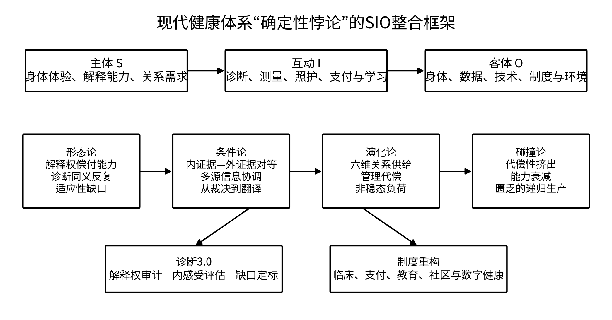
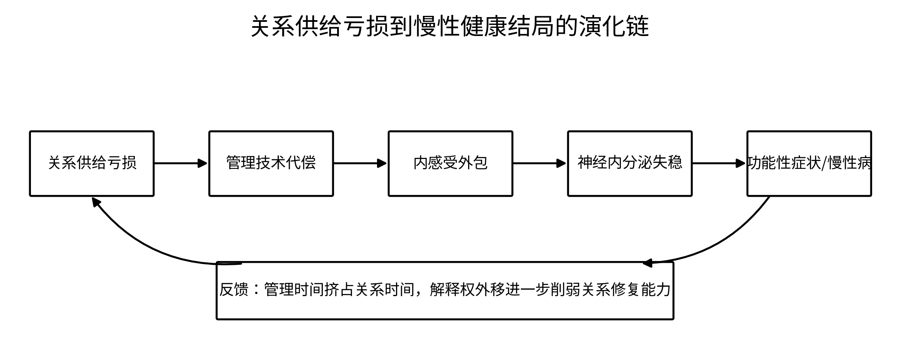
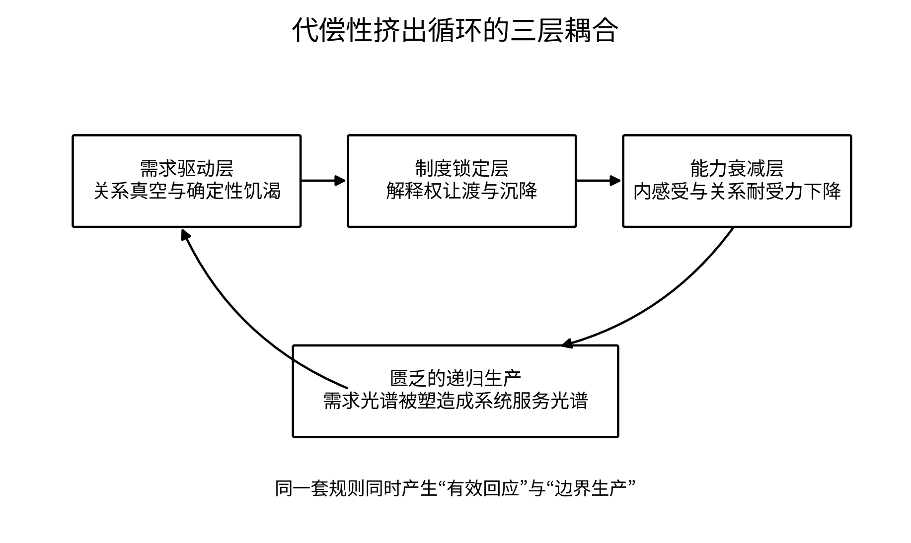
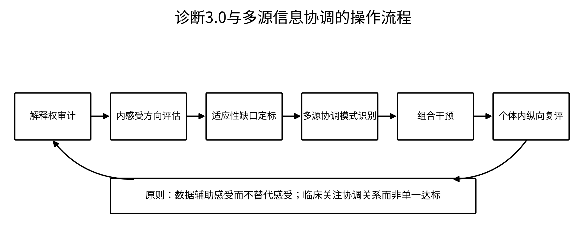

核心术语与缩略语
| 术语/缩写 | 中文含义 | 本论文中的功能 |
|---|---|---|
| SIO | 主体——互动——客体（Subject–Interaction–Object） 把 | 健康视为主体、身体/技术客体及其互动环境构成的复合存在物 |
| 解释权偿付能力 | 个体感知、解读、信任并据此行动的身体解释能力 | 健康本体论的核心指标 |
| 内证据 | 第一人称身体体验、情绪与功能感 | 与外证据平行的独立信息源 |
| 外证据 | 可由第三方重复测量的生物学信息 | 用于支持而非替代主体判断 |
| MS-Harmony | 多源信息协调度 | 识别指标、体验与功能之间的方向关系及时间演化 |
| RSI | 关系供给指数 | 测量六维关系供给的可获得性 |
| CSTL | 代偿性自我追踪负荷 | 测量管理技术作为关系代偿所形成的行为与注意负荷 |
| ALI | 非稳态负荷指数 | 刻画多系统累计生物风险 |
| 诊断3.0 | 以解释权审计、内感受评估和适应性缺口定标为核心的诊断方法 | 从群体横向归类转向个体内纵向识别 |
| 代偿性挤出 | 确定性代偿在缓解焦虑的同时削弱自主能力的机制 | 连接关系匮乏、制度锁定和能力衰减 |
第1章导论
1.1 研究背景：精密化与不确定性的同步增长
现代健康体系的突出成就，是把大量原本不可见的身体过程转化为可测量、可比较、可追踪的数据。从实验室检验、影像诊断到可穿戴设备和算法化健康管理，身体被嵌入前所未有的连续观测网络。问题在于，测量能力的增长并未自动转化为主体对健康的稳固理解。相反，许多个体在缺少数字反馈时难以判断自己是否疲劳、是否睡好、是否需要休息；在检查结果正常时，又难以解释持续存在的疼痛、乏力、失眠、胃肠不适和焦虑。这种”外部确定性增加、内部确定性下降”的并存，构成本论文所称的现代健康体系确定性悖论。
这一悖论不能被简单归因于技术不够精密、个体健康素养不足或医生沟通不充分。技术越精密，可能越强化”只有被测量的东西才真实”的认识习惯；健康教育越强调达标，可能越把身体经验压缩为行为绩效；沟通改革如果不触动何种证据具有最终效力的制度基底，也可能只把否定主体经验的过程包装得更加温和。因此，需要把研究对象从单一技术、单一制度或单一个体，转向它们在互动中形成的复合体。
过去半个世纪，全球公共卫生领域取得了一系列令人瞩目的成就。传染病负担大幅下降，心血管疾病死亡率持续走低，癌症五年生存率显著提升。与此同时，可穿戴健康设备、自我量化应用与个性化医学的兴起，赋予个体前所未有地”管理自己健康”的能力。理论上，人类应当正在进入一个比以往任何时候都更健康的时代。
然而，现实给出了相反的信号。慢性疲劳综合征、肠易激综合征、纤维肌痛等功能性障碍的患病率持续攀升，这些疾病的共同特征是患者的主观痛苦与客观检查结果之间存在显著落差。焦虑与抑郁障碍的全球患病率在拥有最完善医疗体系的高收入国家中反而最高。一种新型的”健康焦虑”正在扩散：人们不仅为”生病”而担忧，也为”数据不够完美”而焦虑——心率变异性不达标、深度睡眠占比偏低、某个生化指标处于正常高值，都成为情绪困扰的来源。更隐蔽的是，越来越多的人报告说，他们”感觉不到自己的身体了”——他们需要手表告诉他们今天有多累，需要应用程序告诉他们昨晚睡得怎么样。内感受，这种人类最基本的自我觉察能力，正在大面积衰退。
这是一个无法回避的悖论：为什么一个技术与制度越来越致力于提供健康确定性的时代，却生产出了更不确定、更焦虑、更难感知自身的人？
1.2 研究对象、核心问题与理论边界
本论文的研究对象不是抽象的”健康技术”，也不是孤立的”患者体验”，而是现代健康体系中主体、身体、技术、制度和关系环境通过诊断、测量、照护、支付与自我管理形成的SIO复合存在物。论文主要聚焦具有以下特征的场景：个体具有清晰表达能力；不存在已经确诊、必须立即依赖外部指标处置的急重症；身体不适具有长期性、功能性或多系统性；外部数据与主体体验之间存在持续的不协调。急诊、严重创伤、意识障碍和围术期等必须由外部数据优先保障生命安全的情境，不属于核心适用范围。
围绕该对象，本论文提出六个相互嵌套的问题：第一，健康究竟是一组生物属性，还是主体对身体信号拥有解释权的互动状态？第二，内证据与外证据发生冲突时，临床应当裁决还是翻译？第三，关系供给的流失为何会驱动个体依赖管理技术？第四，代偿为何会从短期安抚转化为能力挤出？第五，制度如何通过自身的规则生产其能够服务的需求？第六，如何把这些理论命题转化为可测量、可证伪、可实施的诊断和政策工具？
| 理论层 | 核心问题 | 核心概念 | 主要输出 |
|---|---|---|---|
| 形态论 | 健康以何种形态存在？ | 解释权偿付能力、诊断同义反复、适应性缺口 | 诊断3.0与个体内纵向方法 |
| 条件论 | 健康知识在何种条件下成立？ | 内证据、外证据、多源信息协调 | MS-Harmony与翻译式临床 |
| 演化论 | 健康困境如何发生和演化？ | 六维关系供给、管理代偿、内感受外包 | RSI、CSTL与关系健康研究 |
| 碰撞论 | 为何有效系统会反向制造脆弱？ | 代偿性挤出、解释权沉降、匮乏的递归生产 | 系统动力学模型与跨域理论 |
1.3 研究命题与分析层次
本论文的中心命题是：现代健康体系的确定性悖论，源于外部确定性在主体——身体——制度互动中获得了过高的解释优先权。当关系供给不足时，外部数据和标准化流程不仅提供信息，而且承担安抚、确认和秩序化的关系代偿功能；代偿的成功又通过解释权沉降、通路闲置和关系时间挤占，削弱主体原有的内感受与关系耐受能力。系统继而用自身的分类、指标和支付规则扩大可被其命名的需求，并压低不可被表征的体验合法性，由此形成匮乏的递归生产。
该命题包含四个分析层次。微观层关注个体如何感知、解释和信任身体信号；互动层关注医患、用户——设备、成员——组织之间谁的证据算数；制度层关注临床试验、保险精算、教育与平台商业模式如何固定解释权；演化层关注这些互动如何形成自我强化的长期反馈。四层不能相互还原：个体焦虑不能单纯归结为人格，制度控制也不能单纯归结为权力意图，必须分析二者在具体互动中的耦合。
1.4 研究思路、技术路线与论文结构
研究首先通过文献综述定位既有理论的解释边界；继而以SIO主客互动本体论重构健康研究的分析单元；随后依次完成形态、条件、演化与碰撞四个阶段的理论建构；在此基础上，整合形成诊断工具、测量矩阵、制度设计与可证伪研究纲领。该技术路线强调从概念到机制、从机制到操作、从操作到证伪的连续性，避免理论仅停留在价值宣言。

1.5 主要创新与学术贡献
本论文的核心创新是提出一条可迁移的生成机制——“双重同源操作”，并证明它足以统摄一条贯通本体论、认识论、关系生成与制度反馈的理论链。这一机制主张：任何以符号和规则回应人类需求的确定性系统，其有效性与其贫乏化效应是同一次操作必然共现的两面；由此系统在有效运行中持续再生产其赖以存续的匮乏。全书其余各项创新，都是这一机制在健康体系中被逐层展开、逐项测量的结果。第一，把”诊断的基底”提出为独立研究对象，并用解释权偿付能力重新定义健康——这是双重同源操作在个体身体经验层面的显影：诊断规则每一次成功命名，都同步把未被命名的身体信号降格为无临床合法性的噪声。第二，把证据等级问题转化为多源信息协调问题，使内外证据背离成为诊断信息，而非被裁决系统的规则单向湮灭。第三，把社会关系对健康的保护效应拆解为六种可测量的关系供给，并解释管理技术为何被吸附为关系代偿——这是双重同源操作在需求侧的燃料。第四，把代偿性挤出与匮乏的递归生产上升为一般机制，并给出其形式结构（双重同源操作），解释系统为何会在有效运行中制造新的依赖，且这一机制可在教育、管理、福利与数字治理中被独立辨识。第五，形成诊断3.0、解释权审计、RSI、CSTL、MS-Harmony、模式识别付费等可操作工具，使抽象机制落地为可部署的临床与制度构件。第六，为每一核心命题设置竞争解释和推翻条件，使理论具有进入经验研究的明确通道。六项创新的次序不是并列罗列，而是从一般机制到具体显影、再到操作工具与证伪设计的单向展开。
本章小结：导论将研究对象从孤立的主体、客体或技术，转向它们在健康实践中构成的SIO复合存在物，并确定了”形态——条件——演化——碰撞”的整体研究路线。
第2章文献综述：从制度批判到生成机制
本章不把文献综述处理为观点罗列，而是把既有理论视为一组与本论文相邻的解释模型。评判标准不是其是否”正确”，而是它能否解释主体为何主动依赖、能力为何衰减、需求为何被生产，以及如何形成可判定的经验差异。
2.1 医疗化、文化医源性与特定反生产性
“医疗化”这一概念自20世纪70年代经Illich等学者系统阐发后，成为社会学和医学人类学批判医学体制扩张的核心分析工具。Illich在《医学的涅墨西斯》中提出了一个强版本的批评：现代医学不仅没有增进健康，反而通过”医源性”损伤——包括临床医源性（治疗的副作用）、社会医源性（将公民角色转化为病人角色）、文化医源性（剥夺人们应对痛苦、疾病和死亡的传统能力）——系统性地削弱了社会的健康。Conrad等学者后来将该理论推至更广阔的经验领域，展示了从儿童多动症到女性更年期、从脱发到社交焦虑，医学如何通过诊断分类的扩展将越来越多的生活领域纳入其管辖范围。
医疗化批判的贡献是奠定了”健康不是纯粹生物学事实，而是社会建构”这一基本认知。但它有鲜明的边界，也构成了本研究必须跨越的起点。其一，该路径主要从制度权力和利益驱动角度展开批判，未能提供个体心理层面的微观机制——当医学体制把一个人的身体体验重新定义为一堆诊断标签时，这个人是如何从”信任自己身体的感觉”逐步转移到”需要靠检查报告来告诉自己身体是否正常”的？这种转移的心理机制是什么？其二，该路径的批判姿态带有强烈的规范性预设：医疗化是不好的，“去医疗化”是好的。这一预设虽然有理，但无助于解释：在医疗化被广泛批评了半个世纪之后，为什么它不但没有退场，反而以数字健康的形式进一步深化了？这说明批评本身未能触及维持它的深层制度结构——那些不依赖”医生和药厂的合谋意图”、而是嵌在临床试验的统计逻辑、保险精算的风险评估和医学教育的专业社会化过程中的结构性力量。
Ivan Illich在1976年出版的《医学的限度：对健康剥夺的揭露》中提出了”文化医源性”这一概念。他用这个术语指称一种比临床医源性（医生的直接伤害）更深层的社会过程：现代医学制度通过将痛苦、疾病、衰老和死亡全部转化为技术管理的对象，系统性地挤出了个体与社群原本拥有的、以文化传统为载体的自主应对这些生命经验的能力。在Illich看来，医学制度做的事不是”帮人变得更健康”，而是”让人相信自己若不依赖医学就无法面对生命的自然界限”。这是一次深刻的本体论剥夺。
本研究的框架与Illich的理论在结论层面存在显著的家族相似：两者都认为，一个意在提供帮助的制度，在其常态运作中会系统性地产生削弱其声称要保护的目标的后果。然而，在动力结构上，两者存在根本分歧。
Illich的剥夺逻辑本质上是单向的。制度作为垄断性的权力实体，运用其技术权威强制性地排斥和消解民间的、非专业化的健康文化。在这个叙事中，个体是受害者——一个原本完好无损的自足主体，被强大的制度力量剥夺了其文化资源。
本研究则提出一个Illich框架无法容纳的机制：个体的”主动皈依”同样在推动这一过程。当照护关系——来自家庭、邻里、社区的真实回应——在城市化与市场化的浪潮中被持续削薄时，人的身体会陷入一种弥漫性的、无法被言说的存在性不安。这种不安本身不是一个可被精确诊断的”症状”，而是一种需要被确定性填补的空洞。此时，制度所提供的那套东西——血压的精确数字、检验报告上的”正常”戳记、睡眠评分的星级——不是作为”压迫者”被个体抵抗的，而是作为”溺水者眼中的浮木”被个体主动抓紧的。
这个区别不仅是叙事视角的差异，它具有实质性的因果意涵。如果剥夺纯粹来自外部强制，那么削弱制度的垄断性、归还个体的自主权就足以解决问题。这正是Illich开出”自理”（autonomous coping）和”共生”（conviviality）药方的逻辑基础。然而，如果个体对制度的依赖本身就带有”主动投靠”的成分——因为制度回应了一种真实的、在其他地方无法被满足的确定性饥渴——那么仅仅削弱制度而不修复关系供给的匮乏，非但不能解决问题，反而可能让焦虑失去所有抓手而陷入更深的恐慌。
因此，文化医源性告诉了我们制度”如何做恶”，但它没有告诉我们制度”为何如此难以被放弃”。本研究的框架将在这一盲区上展开：制度之所以坚固，不仅因为它垄断权力，更因为它回应了一种真实的匮乏。那些被制度”剥夺”了健康自主权的人，也是制度最依赖的客户。
Illich在另一部著作《共生工具》（1973）中提出了”特定反生产性”这一更一般化的概念——远早于系统动力学的同类建模。他用这个术语指称一种悖论：当社会制度（交通、教育、医疗）超越特定的规模门槛之后，其继续运作为社会带来的负面效果开始超过正面效果，因为其运作系统地剥夺了人们自主行动的能力与条件。交通系统越扩张越拥堵，学校教育越延长越扼杀自主学习，医疗体系越精密越让人民丧失健康自主能力——这三者是Illich的经典例证。
本研究的论点与Illich的反生产性概念共享同一个核心直觉——制度可以”越有效越有害”。然而，Illich将这一现象的触发条件锚定在制度的规模与垄断性上。在他的框架里，只要制度足够大、足够具有排他性，就会发生反生产性——因此，解决方案是降低规模、去中心化、打破垄断、恢复”共生”的小型自治社区。
本研究则提出一个Illich未考虑到的可能：代偿性挤出可能不是制度规模的函数，而是代偿行为的形式条件本身的函数。也就是说，即便在一个去中心化、非垄断、在人际层面小规模发生的代偿关系中——例如一个朋友间非正式地互相用睡眠评分来”监督”对方早睡——只要这个关系在运作中回应了被代偿者因关系匮乏而产生的确定性饥渴，并且通过”用数据说话”的规则来定义什么是”有效的关心”，它同样可能发生挤出效应。被代偿者可能逐渐在”睡眠数据被朋友关心”的强化下，越来越依赖数据来赋予自己”休息好了”的确证，而自己感知”是否休息够了”的通道被闲置。
如果这一推断被证实，那么Illich的”规模-垄断假设”对于解释反生产性而言是不充分的。反生产性不是制度”膨胀”到一定规模之后才出现的副作用，而是代偿这一行为的形式条件中就内嵌的可能性：只要你的帮助方式是提供一个”标准答案”来替代被帮助者自己寻找答案的过程——即便这个”答案”是由一个亲近的朋友而非一个官僚机构提供的——你就可能已经在启动那个挤出自主能力的循环。
这构成了本研究与Illich传统之间的可判定差异。若实证研究发现，在小规模、非正式、双向对等的同伴照护关系（非制度化代偿）中，长期接受此类代偿的个体未出现内感受衰退，则Illich的规模-垄断假设胜出。若仍出现显著衰退，则本研究所主张的”代偿形式条件本身即带有挤出风险”的机制获得了独自的解释力。
2.2 数字健康、生物医学化与量化主体
第二条路径发端于21世纪初”量化自我”运动的兴起，后经Lupton、Ruckenstein、Schüll等数字社会学者的发展，形成了一套针对数字健康技术的社会批判。Lupton从福柯的”自我技术”和”生命政治”概念出发，指出可穿戴设备和健康App将健康管理转化为一种自我监视的日常实践——个体被鼓励以”对自己的健康负责”的名义持续追踪步数、心率、睡眠、卡路里摄入，而这个过程同时将外部规范（什么是”正常的”步数、什么是”健康的”睡眠模式）内化为自我评价的标准。Ruckenstein等基于对可穿戴设备用户的民族志研究，进一步揭示了数据解读中的”解释弹性”——同一组数字在不同用户那里可能产生完全相反的焦虑或安慰效应——从而指出”量化自我”的理想（数据带来透明和掌控）与其实际效果（数据带来更多的不确定和焦虑）之间存在根本性裂痕。
该路径敏锐地捕捉到数字监控如何通过日常化技术侵入个体身体经验的细部，比医疗化批判更贴近本研究关注的”身体信号被外部数据替代”这一机制。但其主要局限在于缺乏纵深的历史视角。Lupton和Ruckenstein的研究主要集中在智能手机和可穿戴设备普及之后的时段（约2010年代至今），这使得他们倾向于将”数字监控”视为一种相对晚近、主要由技术产业驱动的新现象。本研究在历史路径分析中将展示：数字监控的扩张不是技术先进到一定程度之后的”自然溢出”，而是现代医学在病灶化（19世纪末）、理想化（1948年WHO健康定义）和实时化（2010年代至今）三次关键分叉中逐步收窄健康定义之后的必然结果。技术在第三次分叉中充当了”最后一公里”的工具，但前面两步的制度准备，才使得技术一出现就能与保险精算、临床路径和生活方式管理无缝对接。
医疗化（Medicalization）与生物医学化（Biomedicalization）这两个概念之间的内在演化关系，代表了过去半个世纪医学社会学对这一议题最系统的理论积累。本研究将它们放在一起讨论，因为它们在本研究论点的判别上共享同一个关键盲区。
Peter Conrad等学者发展的医疗化理论指出，越来越多此前不被视为医学管辖范围的人类生活领域——从分娩、悲伤到性功能、注意力——正在被纳入医学的诊断与治疗体系。这是一个关于”权威扩张”的叙事：医学作为社会控制的一种形式，运用其专业话语权力将社会问题重新定义为个体病理。进入21世纪后，Adele Clarke等人进一步提出”生物医学化”概念来描述这一趋势在技术科学时代的新面貌：个体不再是被动的”被医疗化者”，而是主动的自我监控者与风险规避者，通过生物医学技术（基因检测、可穿戴设备、自我量化）来优化自己的身体与生命。在这一新阶段，医学权力不再仅仅来自外部权威，也是从内部被个体自愿拥护和执行的。
本研究的”代偿性挤出”机制与这个传统在现象描述层面有大量重叠——尤其是个体如何主动依赖生物医学数据来获取确定感，以及这种依赖如何重塑自我认知。然而，在因果推断层面，它们存在一个本研究可加以填补的关键裂隙。
生物医学化的核心因果预设是”技术对主体的重塑”。它认为，通过生物医学技术来理解和管理身体的个体，会形成一种新的主体性——Clarke等人称之为”生物医学化的主体性”。这种主体性的核心特征是：个体将身体视为需要持续监控、优化和规避风险的项目，并通过技术来”增强”自我认知的能力。
但请注意，“增强”这个词在一组关键能力上并未经受严格检验。一个长期依赖手表数据来判断自己是否疲劳的人，当被要求在不看数据的情况下报告自己当前的身体感受时，他做得比从不依赖这类数据的人更差还是更好？当内外证据发生分歧——数据一切正常但他深感不适——他是更有能力在两个信息源之间进行权衡，还是更倾向于直接压制主观感受？生物医学化的框架并未对这些问题给出确定的预测。事实上，它的整体取向暗示着技术”增强”自我监控能力，而本研究的框架则预测恰好相反：长期的技术依赖，在同一个过程中挤出了个体原有的、不依赖外部数据的自我感知通道。这不是”增强”，而是”置换”。
因此，本研究与生物医学化之间的可判定差异可以简述如下：在控制生物医学技术使用强度后，若个体的内感受能力——客观测量（如心跳感知任务）和主观报告（身体觉察多维评估）两个维度——与不使用技术者相当甚至更高，则说明技术确实只是”增强”，本研究的核心预测被证伪。若内感受能力随使用强度递减且存在不可逆特征，则生物医学化的”增强/重塑”叙事需要被本研究的”代偿性挤出”所修正。
与社会流行病学平行发展的另一个领域是医学社会学对”健康主义”和”数字健康”的批判。Crawford（1980）在四十年前提出了健康主义概念，指出当代社会正将健康从自然的身体状态重新定义为个体道德责任的范畴——个体”应该”保持健康，否则就是在道德上不够勤勉。这一预言在随后几十年的自我追踪技术与健康数据化浪潮中得到了远超预期的兑现。Lupton（2016）在讨论量化自我运动时指出，可穿戴设备不是中性的信息收集器，而是一种训练用户将自身数据化的”教学机器”——学会用设备教练的眼神审视自己，本身就是数字健康公民身份被建构成形的过程。Ruckenstein与Schüll（2017）在一篇年度综述中归纳了该领域的三条批评主线：数据隐私与平台的资本逻辑、量化实践对主体性的重塑、以及技术与道德话语的共谋。Ajana（2017）则从生物政治的角度分析了自我追踪如何成为”数字生命政治”的典范——个体自愿参与对自身的管理，并被赋予一种”赋权”的错觉，而管理目标本身从未被置问。
这一批文献为理解当代健康文化的道德质地提供了不可或缺的武器，但它们始终踩在一个关键问题外：如果自我监控在生理上真的不产生其许诺的健康收益，为什么这么多人仍然无法离开它？ 健康主义的批评正确地指出了管理是一种社会规范，但规范本身无法解释一种行为的”成瘾性”——不管理的手环被摘掉后，人们不会觉得自己从一个道德义务中解放了，反而会感到一种短促但切实的恐慌。这与成瘾的戒断反应在现象学上是相似的。要解释这种恐慌的身体根源，批评传统必须进入神经内分泌学层面，而这一跨步在现有文献中并未完成。本研究提出的代偿假说，就是从被批评传统遗漏的这道缝隙中穿过，试图打通社会规范与生理需求之间的阻断：人不是被规范劝说去管理自己，而是关系的缺失制造了一个生理性的安抚需求，而管理技术恰好以其形式模仿了这个安抚。
2.3 全人医学、叙事医学与循证医学批判
第三条路径从临床内部发起，以Engel于1977年提出的”生物-心理-社会模型”和21世纪初兴起的叙事医学运动为两个里程碑。Engel的出发点是对生物医学还原论的有力批评：把疾病还原为器官、组织、细胞的物理化学异常，忽视了心理和社会因素在病因和病程中的构成性作用。叙事医学则从临床沟通的角度切入，倡导医生在接受培训时便学习”倾听患者的故事”，视患者的主体体验为临床证据的不可或缺之组成部分，而非干扰诊断的”主观杂音”。Charon等叙事医学的推动者提出”叙事能力”作为临床基本技能，主张医学教育应将”关注-表征-归属”这一套叙事行为系统性地纳入问诊和病历书写的训练。
该路径的贡献在于，它试图在现有体系内部修复生物医学还原论造成的缺口，是唯一一条直接回应”个体身体感知在临床中应该处于什么位置”这一问题的路径。但其根本局限在于，它主要限定在”医生-患者”之间的人际沟通层面。当它的改革触及临床试验的统计规则（什么算”有效”的证据）、保险精算的准入门槛（什么人符合给付条件）、医学教育的标准化考试（什么是一个医生”必须掌握”的知识）这三个环节时，沟通层面的改良就会被系统性地消弭。一个在态度上充分共情的医生，在面对一台要求他填写ICD编码的电子病历系统时，仍然必须把患者的不确定体验翻译成一个确定的疾病标签——否则保险不会给付、科室绩效不认账、规培考试不给分。沟通改良没有改变编码背后的本体论预设：诊断仍然是一个将个体与群体比较、并根据比较结果划定正常/异常二值的操作。因此，全人医学和叙事医学运动的悲剧性处境是：它在道德上被广泛赞颂，在实践上被持续推广，但在制度结算上被有效屏蔽。
对生物医学还原论的批判由来已久，大致形成了三条主要的理论路径。第一条路径可称为”现象学-叙事路径”，强调疾病（disease）与病痛（illness）之间的根本区分（Kleinman, 1988），认为医生的核心任务不仅是解释生物学异常，更是理解并回应病人独特的疾病体验。以此为基础，叙事医学（Charon, 2006）倡导临床实践中的”平行病历”，鼓励医者写下病人的个人故事，以对抗纯粹的技术性描述。第二条路径是”批判公共卫生路径”，该路径将健康问题置于更广阔的社会结构下审视，论证健康不平等是社会、经济与政治力量不平等分配的直接后果（Marmot, 2005）。第三条”卫生经济学与健康测量路径”则集中批评健康效用值（如QALY，即质量调整生命年）的单维化倾向，主张开发更敏感、多维的患者自报结局测量工具（Brazier et al., 2017）。
这三条路径各自提供了深刻洞见，但它们共享了一个关键的盲区：它们均未触动”证据金字塔”这一医学知识生产与制度操作的基石。在第一和第三条路径的呼吁下，大量患者自报结局测量工具被开发出来，并被整合进临床指南。然而，在实际操作中，这些工具几乎总是被作为次级的、辅助性的证据——它们可以补充或优化一个基于生物学证据的决策，却无法在逻辑上和制度上获得与生物学终点同等的裁决效力。当一份指南基于随机对照试验（RCT）的死亡率数据给出A级推荐时，一个来自大型观察性研究的、关于该干预导致显著自报体验恶化的证据，通常只会被降级为需进一步研究的不确定性，而不会直接构成对该A级推荐的挑战。
这种”认识论上的不公”（epistemic injustice）并非出于恶意或疏忽。它的形成有其深刻的历史路径。自20世纪中叶以来，为应对药品市场的混乱和疗效声称的泛滥，以美国1962年《Kefauver-Harris修正案》为代表的一系列法规，确立了随机对照试验作为药物有效性评估的”金标准”（Carpenter, 2010）。这一标准之所以被选中，不仅因为其内部效度高，更因为它满足了新兴管理型国家在药品审批、保险支付和医疗过失鉴定中对标准化、可辩护证据的渴求（Marks, 1997）。一种声称有效的疗法，必须能在一套去情境化的、标准化的程序中被证明优于安慰剂或现行疗法，才能在制度中获得合法身份。在这个历史选择的关键节点，那些难以被RCT格式化的治疗方式，如心理治疗、康复训练、生活方式干预以及传统医学，被系统性地边缘化了。它们的失败不是效果的失败，而是”格式的失败”（format failure）：它们改善的那些复杂、情境依赖、难以被第三方量化的生命体验，在制度化的证据语法中根本不构成一个合格的”终点”。
这一过滤过程在制度层面形成了一个多层互嵌的稳定结构。在方法论层面，科学共同体的共识将”证明”与”按RCT格式验证”潜移默化地等同起来，格式的排他被内化为真理的排他。在支付层面，循证指南与国家医保目录的耦合，创造了一个”低证据等级→无医保支付→低临床使用率→低研究投入”的恶性循环。在主体层面，普通人在唯一可获得且被社会承认的工具（如体检报告、健康手环）的反复训练下，逐渐内化了数字对健康的定义权，其自身用语言描述、用感觉判断身体状态的能力——“感觉权”——发生了系统性退化。
针对这一僵局，已有学者提出了激进的理论构想。例如，一些研究科学知识社会学的学者指出，医学证据本身就是一种社会建构，所谓的”金标准”只是某一历史时期认识论政治的赢家，我们完全可以想象并设计替代性的证据范式（Berg, 1995; Timmermans & Berg, 2003）。这些批判极富洞见，但它们的主要贡献在于解构旧的，而未能提供一套在概念严密性、操作可行性和制度嵌入潜力上足以取代”证据等级”的完整的、建设性的新房角石。
本研究正是在上述文献的基础上向前推进。本研究的独特贡献在于，它不满足于在旧金字塔中为替代疗法和患者体验争取一个更靠前的位置，也不满足于仅仅在理论上解构”证据等级”的客观性，而是提出了一套完整的替代框架——“多源信息协调”框架。该框架包含了从本体论预设、核心概念、评估工具、支付机制到教育干预的一整套连贯方案，并明确设计了其可被证伪的经验检验路径，从而将关于健康本质的哲学争论，转化为一个可供实证研究者分头取用、独立推进的研究纲领。
2.4 社会关系、社会处方与非稳态负荷
社会关系影响健康的实证基础现已足够坚实，几乎不需要再被辩护。Berkman与Syme（1979）在阿拉米达县的经典追踪研究中首次以人口数据确认了社会整合指数（婚姻状况、与朋友家人的接触、教会与社团参与）对死亡率的独立预测作用，开启了此后四十年的社会流行病学传统。2005年的一项荟萃分析将33项研究的元分析再综合，得出低社会支持的年龄调整死亡风险比为1.29至1.58，而低社会整合的风险比为1.48至2.08（Holt-Lunstad et al., 2010）。2015年同一研究组的更新元分析进一步确认：主观孤独感、客观社会隔离和独居均独立预测早期死亡，且效应在年轻人中同样存在（Holt-Lunstad et al., 2015）。在生命历程的前端，Felitti与Anda领衔的ACE研究是二十世纪流行病学最不可绕过的地标之一——在一项针对凯撒医疗集团超过17,000名成员的研究中，童年不良经历的数量与成年期的主要慢性病、精神障碍和过早死亡之间存在逐级递增的风险梯度（Felitti et al., 1998）。在其后的三十年里，ACE研究被复制到数十个国家，生物学界对其机制的研究积累了独立的证据链：ACE与成年期炎症标记物（CRP、IL-6、TNF-α）、端粒缩短和皮质醇节律平坦化之间存在稳健的剂量-反应关系（Danese & McEwen, 2012; Coelho et al., 2014）。
如果上述证据指向社会关系缺失对身体的损伤，另一组证据则展示了社会关系在场对损伤的缓冲。Cohen等人（1997）在一项经典的病毒接种实验中，将健康志愿者暴露于感冒病毒后发现：社会关系多样性的增加以剂量-反应方式降低临床感冒的发生率，且这一效应独立于病毒特异性抗体的基线水平。Hostinar等（2014）在一篇综述中将这些分散的实验结果整合为”社会缓冲假说”：在应激源存在时，安全依恋对象的存在可以显著减弱皮质醇反应和杏仁核的激活，但这种缓冲效应的强度在个体成年后高度取决于其童年期所建立的内在工作模型。这个”童年期写入、成年后读取”的通道，在神经生物学上为ACEs与成年慢性病之间的关联提供了合理的中间机制。
然而，当人们追问”社会关系具体提供了什么，以至于它的缺失会损伤身体”时，文献并未形成统一的概念框架。Thoits（2011）归纳了社会支持发挥作用的七种理论机制，包括工具性支持、信息支持、情感支持、归属感、自我认同维护、社会影响与社会参与，但这七种机制的清单性质本身暴露了问题：它们之间的关系不清，也无法解释为何在信息与工具支持的获取从未如此便捷的当代（手机一键叫车、在线健康咨询、知识付费课程），身体的压力负荷反而在加深。换言之，流行架构把社会支持当作一组可拆分的商品，而错过了它在身体上最原初的功能：不是”提供某样东西”，而是”始终在场”——在场本身就是信号。 本研究对六种关系供给的定义，正是在这个批评的基础上推进的，详见理论框架章节。
McEwen与Stellar（1993）引入”非稳态负荷”概念，将应激生理学从塞里的”一般适应综合征”线性模型，推向了一个更精细的累计损伤框架。其核心思想是：身体对应激源的短期适应——血压升高、糖皮质激素释放、炎症因子动员——是进化上高度保守、在急性威胁情境中具有保护作用的反应链。但当这一反应链反复启动且未能获得充分的恢复期时（即”磨损与撕裂”的积累），正是这套原本用于保护的机制变成了损伤的来源——促进动脉粥样硬化、胰岛素抵抗、海马神经元损伤和免疫失调。McEwen与Wingfield（2003）后来将模型扩展为”非稳态负荷模型”，区分了四种非稳态负荷的来源：反复的应激事件、适应反应的习惯化、对应激的调节无能、以及一种代偿过度（过度反应以维持基线）。这第四种来源——代偿——对本研究的论证至关重要。
在非稳态负荷的操作化层面，Seeman等人（2001）提出了一套被后续研究广泛引用的多系统综合指数，包括收缩压与舒张压、腰臀比、血清HDL与总胆固醇比值、糖化血红蛋白、12小时过夜尿皮质醇、肾上腺素、去甲肾上腺素与DHEA-S，共十项生物标记物。该参数集在MacArthur成功老龄化研究中对全因死亡率、心血管事件和认知衰退的预测效度已被多个独立队列交叉验证（Gruenewald et al., 2006）。在2010年后的研究中，又逐渐被补充了IL-6、CRP等炎症标记物以及HRV参数。
然而，非稳态负荷文献中一个显目的空白是：它没有为”代偿”的精细操作化提供测量工具。如果代偿是维持基线的过度努力，那么这一努力本身对身体的磨损应该可以从外部行为中被捕捉到、并与内部生物标记的变化建立起时间序列上的因果关系。本研究提出的CSTL量表——从情绪代偿、叙事替代与关系时间挤出三个维度测量管理技术的代偿负荷——就是填补这一空白的初步尝试。将RSI、CSTL与非稳态负荷的生物标记物连接在一套结构方程模型的框架下，代偿假说便从概念性的隐喻进入了可以被统计检验的理论形态。
在过去二十年里，英国国民健康服务体系内部的一项基层实践逐渐演变为全球公共健康界瞩目的运动——社会处方。全科医生在面对患有慢性病或精神健康问题的患者时，不再（或不再仅仅）开具药物，而是将其转介至社区内的一组非临床服务：烹饪课、步行团、园艺组、艺术工作坊、同伴支持小组。这一做法的逻辑基础是：临床手段只能管理疾病，而健康所需的归属感、目的感与日常生活结构必须从社区中获得，处方的作用是为这种获得搭桥。一项2019年针对英国社会处方效果的系统综述发现，尽管在随机对照试验的证据强度上仍存在明显不足，但高质量的观察性研究显示社会处方群体在主观幸福感、焦虑、抑郁和生活质量评分上的改善达到了小到中等效应（Bickerdike et al., 2017; Drinkwater et al., 2019）。
社会处方运动为本研究提供了一种极其重要的前驱者角色：它在制度上首次打开了医保体系为”关系”买单的可能窗口。但社会处方在理论上的基本逻辑仍然是”关系对人有帮助”，它为本研究的缺失环节——关系帮助人的确切机制、以及管理技术作为关系假肢的反噬效应——提供了一个清晰的对比点。社会处方旨在增加关系供给，而本研究关心的一个更深的问题是：当人已经被管理技术深度训练成”身体经理人”之后，简单地把他放进关系中是否就足以唤醒身体安全信号？减管理处方与关系激活的组合干预逻辑正是从这个质疑中生发出来的。本研究将社会处方视为当代健康制度中最接近”关系修复”的制度原型，但同时指出，如果不在关系干预前先介入个体的管理成瘾模式，关系供给可能只是从另一个方向被消费掉，而无法转化为生理层面的安全信号。
2.5 系统动力学、转移负担与能力衰减
转向形式科学领域，系统动力学中的”转移负担（Shifting the Burden）“基模提供了与本研究论点在结构上最接近的姊妹模型。这一基模由Jay Forrester在20世纪60年代建立的系统动力学传统中发展出来，后被Peter Senge在《第五项修炼》（1990）中做了通俗化推广。
转移负担基模描述如下结构：面对一个深层问题，存在着两种解决路径——根本解（需要投入时间、能力和关系资源）和症状解（短期内快速降低症状）。当决策者反复选择症状解时，两个相互强化的过程被启动：第一，症状表面上被缓解，降低了对根本解的感知紧迫性；第二，症状解的反复使用侵蚀了执行根本解所需的能力和条件。结果是，系统越来越依赖症状解，根本解变得越来越不可行，深层问题反而恶化。
本研究的”代偿性挤出循环”在因果回路上完全吻合转移负担基模的结构：深层匮乏（照护关系缺失）作为需要解决的根本问题；症状解（技术与制度提供的确定性）提供短期缓解；症状解的反复使用侵蚀了根本解的可行性（内感受能力与关系耐受力被挤出）；最终导致对症状解的依赖加深与根本问题的恶化——这正是转移负担的正反馈回路。
然而，转移负担基模是一个通用模型，这意味着它在应用到具体领域时，并未包含对这一特定领域独有的时间动力学特征的设定。本研究在将转移负担基模部署到健康领域时，提出了一个该基模的标准版本所不包含的特定机制假设：不可逆生效衰减。
这一假设主张：症状解对根本解的侵蚀不是”平进平出”的——即侵蚀之后的能力可以通过停止症状解而恢复至原始基线。相反，每一次代偿-暂停-再代偿的循环过后，个体内感受能力被重新激活的上限被不可逆地压低了。这不是”暂时不会了”，而是”恢复能力的基底被损伤了”。本研究据此提出的，是一个转移负担基模标准版本所不包含的生理学假设，而非一条已被神经科学证实的结论：涉及内感受的核心神经回路（尤其是前脑岛与迷走神经传出通路）在长期不被调用后会经历功能连接的结构性重组，以致后期训练所能恢复的上限被不可逆地压低。其推翻条件见下段。
因此，本研究可以被视为转移负担基模在健康领域的一个带衰减律的可证伪实例化。判别两者的可操作方法是：若未来的纵贯干预研究发现，经历过长期解释权让渡的人群在进入”去代偿化”训练后，其内感受能力和关系耐受力的恢复速度和幅度与低让渡组经过同等训练后统计学上无差异，则本研究的衰减律假设被推翻，而通用转移负担基模仍可因能力恢复后系统脱离回路的可能而成立。
2.6 非西方整体医学的潜在互译资源
在西方生物医学之外，中医提供了一个高度发达的关系——身体理论的完整体系。藏象学说中的五脏不只对应解剖实体，而主要是一套以功能网络为核心的概念架构：心藏神、肝主疏泄、脾主运化、肺主气、肾藏精——五藏之间以生克制化关系连接，任何一藏的功能过亢或不足都会沿生克链传导，最终呈现为某种证候。在病机层面，中医的诊断核心之一就是辨别”气机”何处不通、何处郁滞、何处上逆或下陷——这是一种本质上把健康理解为”关系流动质量”的理论语言。更值得注意的是，七情内伤（怒、喜、思、忧、悲、恐、惊过极损伤对应之脏）在中医历史上早已确立了一套情绪-脏腑-气机的理论链接，与现代心理神经内分泌学中压力暴露——自主神经失衡——内脏功能紊乱的路径形成了令人着迷的结构性对称。
本研究并不试图声称这两种理论体系在认识论上是等同的，更不试图将中医辨证直接纳入当代西方生物医学的证据标准之下。本研究所关注的，是在”关系供给如何在身体层面被翻译为生理状态”这个核心问题上，中医提供了一套已独立运转两千年、久经临床检验并被中文世界人民广泛接受的概念工具。当代非稳态负荷研究主要基于HPA轴-交感神经系统-免疫-代谢四轴框架，而中医的气血津液辨证与脏腑经络体系本质上就是另一套对人体全身状态进行整体计量的语言。两套语言之间是否存在可互译的生物学通路？以肝郁气滞为例——在现代队列研究中，肝郁气滞患者被反复发现具有心率变异性的下降、皮质醇节律的平坦化与CRP水平的升高，这些标记物恰好是非稳态负荷综合指数的核心组成部分。这个结构性重叠意味着：两套计量体系在底层捕捉的是同一组身体变化，只是用了不同的概念图表。本研究的理论框架虽然主要建立在西方神经内分泌学证据之上，但设计RSI量表时预留了中医辨证条目转化接口，并在未来研究方向中明确将跨文化互译列为RGHR的第一个核心任务群。这一选择不仅是文化包容性的考量，也是一个严格的科学要求：如果代偿假说无法在非西方医学体系中找到独立的理论等价物，则其声称的跨文化普适性是不可检验的。
2.7 共同盲区：被当作既定事实的”需求”与”健康”
上述三条路径之间的对话已经建立了对当代健康体系困境的局部洞见，但它们未能连接成一条完整的因果链条。医疗化批判揭示了制度的扩张逻辑，但未进入个体感知被改变的微观机制。技术批判揭示了监控的日常渗透，但未展示这场渗透之所以成为可能的制度前提——那些在数字设备出现之前二十年、五十年、一百年就已埋下的制度伏笔。临床改革路径试图从内部修复，但未能识别出界定”什么是有效临床证据”的基底规则恰恰是其修复努力所无法触及的深层壁垒。
三条路径在它们各自的视野范围内都是对的，但把它们摆在一起，那片它们共同都没能照亮的空白地带便清晰起来：制度如何通过改变诊断的基底来重塑个体的身体感知。这里的”诊断的基底”不是指某一个具体的诊断标准或检查技术，而是指定义”关于身体状态的有效知识从何处来”的那条元规则——究竟是来自个体对自己的身体感知（内感受），还是来自一个将个体与群体统计量相比较的外部系统。这条元规则的偏移，是医疗化发生、数字监控渗透、沟通改良失效的共同底板，而此前没有任何一条路径把它作为独立的研究对象提出来。
本研究的理论框架就建在这片空白地带上。
综合以上五条线索，当代健康研究在三个交叉处留下了理论真空。第一，社会流行病学确认了关系缺失的致病效应，但未解释在同样的关系缺失水平下，不同个体的自我管理行为为什么表现出剧烈变异——换言之，“哪些人在关系中缺舟后改乘了管理技术的舢板”这个问题从未被追问。第二，医学社会学批评了自我追踪的规范强制性和主体性问题，但无法解释这种强制如何被个体的身体”接纳”——一个行为只有在其生理上能提供某种短期报酬的情况下才会获得重复执行的动力，而现有批评没有定位这个报酬的来源与性质。第三，非稳态负荷研究将”代偿”作为四大负荷来源之一，却一直不给代偿的行为端提供可测量的标注——“代偿负荷”这个黑洞，在理论上被承认存在，在操作上从未被量化。
本研究的精确定位，就是对着这三个交叉处的同一个缺失点。关系供给被削薄之后、管理技术被身体吸附之前的那个转折点——为什么同样是孤独的人，有些人走上了酒精依赖，有些人走上了过度运动，有些人走上了社交媒体的无限刷新，有些人则沉入抑郁性退缩——这个转折点的开关是什么？本研究的答案是：管理技术因为它模仿了关系供给的形式，而被身体优先选中；但它在生理层面终究是假的，所以这条路长期走下去的终点，不是更健康，而是HPA轴的平坦化与非稳态负荷的指数级累积。这个回答就是对代偿环节的理论填补。
上述五个最近邻概念之间存在着深刻的分歧：文化医源性批判制度的垄断强制，医疗化追踪权力的扩张，生物医学化描述主体的技术化转型，转移负担建模系统的回路锁定，特定反生产性归咎规模门槛。它们来自不同的学科（医学社会学、科学元勘、系统动力学、社会批判理论），使用不同的方法论，得出看似不同的政策结论。
然而，本研究在仔细判别它们与本论点的差异时，辨识出了一个共同的、隐蔽的预设。这一预设支撑着它们全部——不论它们在表面上如何争论——并且构成了它们合力造成的集体盲区。
这个预设是：它们都把代偿系统所试图回应的那个”匮乏”——即个体在照护关系、健康能力、自主性上的缺失——当作一个先在的、具有恒定状态的客观现实。 文化医源性假设了一个被医学制度摧毁之前的、自足完好的”民间健康文化”。医疗化假设了存在着一条可以被清晰界定的、医疗不该跨越的”问题类属”边界。转移负担基模假设”根本解”的可行性是一个客观的存量，等待被决策者正确地调用。特定反生产性假设了一个在规模门槛之下的、“自然”的制度形态。
正是因为站在这个共同的地基上，这些理论的全部解释力都集中在回答”制度/代偿对这个先在的匮乏做了什么”——它剥夺了它？它扩张到了不该去的地方？它侵蚀了它？它导致了反效果？——却集体性地回避了一个更在先的问题：那个”匮乏”本身，是不是也是被生产出来的？
本研究正是要将这个被当作给定的东西变成待解释的产物。匮乏的递归生产，将在下一章展开的完整理论框架中证明：代偿系统最根本的”生产效果”，不是在回应需求的层面做得不够好或过了头，而在于它通过自身运作所依赖的规则与语言，持续地定义、放大和再生产了那种只有它自己能够满足的需求。这不是系统腐败或失灵的证据，而是系统维持其”不可或缺”地位的深层逻辑。
对以上五个最近邻的逐条判别，已完成了本研究在学术谱系中的定位。以下章节将正面展开本研究的理论建构。
综合来看，既有理论分别揭示了权力扩张、技术规训、关系缺失、证据排他和系统锁定，却较少把”需求如何被系统塑形”作为核心对象。它们往往假定一个先在的、稳定的健康需求，随后讨论制度如何回应、扭曲或剥夺它。本论文的推进在于，把需求和匮乏本身重新放回主客互动过程：需求不是只属于主体的心理事实，而是主体、身体信号、符号系统、服务规则和关系环境反复互动后形成的复合产物。
本章小结：既有理论为本研究提供了必要资源，但尚未完整解释主动依赖、能力挤出和需求递归生产。本论文将在这些边界处建构新的统一机制。
第3章研究设计与SIO主客互动分析框架
3.1 研究性质：规范性概念建构与可证伪研究纲领
本研究是一项规范性（normative）导向的概念分析，其目标是完成一项本体论层面的命题建构——即提出”健康是解释权偿付能力”这一替代性命题，并从其公理出发推导出一套可操作的临床方法体系。这与经验研究（以检验特定实证假说为目标）在此目标上不同，但它并非不设经验约束。
本研究属于理论驱动型的概念分析与研究设计论文，其核心任务并非报告一手实证数据，而是完成一项复杂的跨学科概念工程，并将其转化为一套可被独立研究者分头推进的、长期的研究议程。
首先，本研究采用”概念分析”方法，对”健康”、“证据”、“指标”等核心概念的历史语义和制度性使用进行哲学考古学式的分析。该方法的目标不是为这些概念找到一个终极的、正确的定义，而是通过揭示它们如何在一系列社会实践（药品审批、指南制定、保险支付）中被动用和重塑，暴露其内含的、未经审查的权力预设和排除机制。例如，本研究对”证据”的分析，不是去评判RCT在统计学上的优劣，而是去分析它如何从一个方法论工具，演变为决定某种知识形态和生活方式能否在制度中获得生存权的政治-经济过滤网。
其次，本研究采用”跨学科理论综合”方法，系统性地从信息科学、现象学、演化生物学和卫生经济学等领域引入远端理论资源，并对这些调用的有效性进行显式论证。每次调用均须回答：为何该学科的概念应用到健康领域是有效的？其结构性同构点在哪里？其有效边界又在哪里？
最后，也是最重要的，本研究的方法论核心是设计一个”可证伪的、分层的研究纲领”。一个范式转换的理论，如果仅仅停留在哲学宣言层面，最终将被证明是不育的。因此，本研究将自身的理论贡献自觉地定位为一个”研究纲领的硬核”（Lakatos, 1978），其价值在于能否生发出一系列新颖的、互相关联的实证问题。为此，方法论上本研究遵循以下步骤：第一，从理论硬核（内外证据对等、多源信息协调）推导出可直接测量的核心变量（如多源信息协调度）；第二，设计能够检验该变量预测效度的研究方案；第三，明确指出何种实证结果将构成对理论硬核的根本性挑战（反例）；第四，规划纲领的下一步拓展方向。通过这样的设计，本研究将哲学论辩转化为一个本地学者可以分头进入、独立开展工作的实证前沿。
本研究的论证推演遵循内在批判的逻辑：从主流范式（循证医学的证据金字塔）的困境出发，揭示其内部无法自洽的矛盾；然后，调动跨学科资源，构建一个能够同时容纳和解释内外证据的新地基；接着，操作化这块地基，展示它能长出哪些全新的临床、支付和教育工具；最后，主动引入最强竞争解释，并设计可操作的、能排除这些竞争解释的经验检验，以完成整个理论的自我防御与进化准备。
3.2 概念分析、历史制度分析与跨学科综合
本研究采用概念分析与历史制度分析双轨并行的策略，并辅以跨学科类比有效性论证。概念分析的主轨用于三个任务：（1）对”诊断的基底”“解释权偿付能力”“内感受方向”“适应性缺口”等新概念给出操作化定义；（2）揭示”诊断同义反复”这一此前未被命名的临床实体的概念结构；（3）从新的本体论公理出发推导出可操作的方法论体系（诊断3.0）。历史制度分析则用于为概念分析提供经验骨架——它不是叙事性历史，而是对三次关键制度选择（病灶化、理想化、实时化）的”分叉结构”分析：每一步，本研究都将识别出当时存在的替代路径，并追问为什么是这一条路径而非那条路径被制度化。这一步为”旧本体论是历史选择的产物、而非科学必然”提供了论证支撑。跨学科类比的有效性论证已在理论框架部分完成——本研究在调用免疫学和内感受研究的理论资源时，同步说明了类比的有效边界、结构同构点以及不允许被外推的领域。
本研究采用概念分析与理论建构的方法，结合对既有跨领域实证证据的串联推演，提出一套可以被后续实证研究检验的理论框架。此方法的选择根植于本研究所处理的问题特性：当代健康困境的核心故障点不在单一学科内部，而在流行病学、神经内分泌学与医学社会学的交界处——这个故障点在过去之所以未被缝合，恰恰是因为实证研究各自在单一范式内精细化操作，而无人将各自观察到的”同一现象的不同侧面”放入同一个因果模型中对话。本研究所做的就是这道跨学科缝合工作，其学术性质属于理论综合而非原始数据收集。
本研究的分析逻辑工具包括以下四个步骤。第一，概念建构——从分散在不同学科中以不同术语被描述的关系健康保护效应与管理健康反噬效应中，提炼一组在因果链上可以被统一操作的初始概念，并给出其在行为频率或生物标记层面的锚定条目。第二，机制推演——基于上述概念之间的理论关系，推演出一条从供给亏损到慢性病终点的因果命题链，确保每一步推演都可在已有实证文献中找到至少一个独立证据锚点（例如迷走神经张力与内感受的关联、皮质醇平坦化与ACE的关系）。第三，跨学科类比验证——将关系供给功能替代的逻辑与依恋理论中的母性剥夺替代行为、非稳态负荷模型中的四类载荷进行类比，检验逻辑上的同构性与边界条件。第四，工具设计——将理论建构的核心变量（供给密度、代偿负荷、非稳态负荷、慢性病终点）操作化为可被现有流行病学队列或干预实验直接使用的测量工具，并为其附上失败的识别标准与修复路径。
本研究方法的主要局限有三点。其一，作为理论建构型论文，本研究本身不产生新的经验证据——所提出的因果链在每一环节上都引用了已有的独立实证文献作为支撑，但整条链的完整中介效应尚未在任何单一队列中被一次性检验。其二，在跨学科类比的有效性上，本研究已经为每个类比标定了边界条件，但这种边界判定本身的审慎性尚待后续实证检验：一次被设计用来检验代偿假说的研究发现”管理代偿负荷与ALI无关”，这一潜在失败的可能性并未被本研究排除。其三，“六维关系供给”的理论结构在当前阶段仍然是一项概念性的分析框架；它的六个维度虽然在行为频率层面可以放入单一的评分量表，但六维之间的内部结构——正交还是斜交、各维度的不等权重、跨文化因素等价性——尚未经过真正的心理测量学检验。本研究在RGHR的第一个核心研究问题群中，将RSI的因素结构与跨文化效度列为首位，正是对这一局限的诚实承认。
3.3 SIO复合存在物与健康研究的分析单元
SIO主客互动本体论认为，主体（S）、互动（I）和客体（O）不是三个彼此孤立且先于互动而完整存在的实体；在具体认识与实践中，真正需要被解释的是三者构成的复合存在物。健康研究中的主体包括患者、用户、医生、照护者、管理者与公民；客体包括身体、症状、检验数据、设备、诊断分类、保险合同和社区资源；互动包括感知、问诊、测量、解释、支付、照护、自我管理和政策执行。健康状态因这些要素的组织方式、反馈规律和环境嵌入而生成。
SIO环境不是主体或客体的外部背景，而是与当前互动具有共同主体、共同互动方式或共同客体，并能够推动或阻碍当前互动的一组其他SIO。以可穿戴设备为例，单次”用户查看睡眠评分”并不是封闭事件；同伴比较、雇主健康计划、保险激励、临床话语、平台推送和家庭关心方式共同构成其环境。只有把这些相互影响的SIO集合纳入分析，才能解释为何同一设备在不同关系与制度条件下可能表现为赋能、代偿或挤出。
据此，本论文的分析单位不是”数据是否准确”，而是数据在何种互动结构中获得何种解释权；不是”关系是否存在”，而是关系供给能否在关键时刻被调用；不是”技术是否有害”，而是技术如何与主体能力、制度规则和环境反馈耦合。该分析单位使本论文能够跨越医学哲学、医学社会学、公共卫生、神经科学、系统动力学和政策研究之间的学科边界。
| 维度 | 典型要素 | 分析问题 |
|---|---|---|
| 主体（S） | 患者、用户、医生、照护者、组织、公民 | 谁能感知、命名、解释并据此行动？ |
| 互动（I） | 问诊、测量、照护、支付、教育、自我追踪 | 解释权如何分配？何种反馈被强化？ |
| 客体（O） | 身体、症状、数据、量表、设备、分类、合同 | 何种对象被视为真实、可治理和可支付？ |
| 环境（E） | 家庭、社区、平台、医疗、保险、劳动制度 | 哪些相邻SIO推动或阻碍当前健康互动？ |
| 复合结果 | 身体信任、协调模式、依赖、恢复能力 | 复合体呈现何种特征、规律与结构？ |
3.4 形态——条件——演化——碰撞四阶段方法
“形态”阶段回答复合存在物是什么，识别健康困境的关键特征与结构；“条件”阶段回答何种证据规则、关系供给和制度安排使该形态得以成立；“演化”阶段追踪互动如何在时间中积累、转化和分化；“碰撞”阶段把新模型与相邻理论及其他领域进行结构对照，以发现可判定差异和更一般的生成规律。四阶段不是线性流程，而是递归循环：碰撞产生的新问题会反过来修正形态定义与条件设定。
该方法与本论文四篇基础论文形成同构关系。形态论文提出解释权与诊断3.0；条件论文提出多源信息协调；演化论文提出关系供给代偿；碰撞论文提出代偿性挤出和匮乏的递归生产。博士论文的合成工作把四者从平行论文提升为同一研究纲领内部的四个分析层。
3.5 证伪逻辑、适用边界与研究伦理
概念分析的固有局限在此必须诚实陈述。其一，本研究提出的”解释权偿付能力”和”诊断同义反复”等概念，其经验效力的最终检验不在概念分析的内部，而在它能否指引经验研究者找到此前未被发现、或未被系统性命名和测量过的现象。如果一项针对初级医疗就诊者的现象学研究中，查不到任何与”反向内感受”对应的体验模式，那么本研究的概念建构就面临被否证的风险——这也正是本研究在结论部分给出了七个可操作、可独立验证的研究项目的原因：概念分析本身不设经验证据，但它必须能生成可被经验证据否证的假说。其二，本研究的历史制度分析主要集中在现代西方医学体系，对中国传统医学（中医）和南亚传统医学（阿育吠陀）中解释权分配机制的差异仅做了简要提示。因此，本研究建构的”诊断3.0”体系在以这些非西方医疗体系为主导的社会中，其适用性需要被重新校准——这是未来研究的一个明确方向。其三，本研究的分析单元主要是个体层面的身体感知与制度层面的结构约束之间的互动，但对社会分层变量（收入、教育、职业）如何调节这种互动——不同阶层面临的解释权转移压力在结构上是否存在质的不同——尚未充分展开。其四，本研究主要聚焦于慢性功能性障碍领域；在急性医学（急诊、创伤、围术期）和严重精神障碍（精神病性障碍、重度抑郁伴自杀风险）场景中，“解释权偿付能力”命题的适用边界未被划定，这是本研究明确识别并留给后续研究的一个硬问题。
本论文坚持三类证伪要求。其一，机制独立性：在控制健康焦虑、人格、社会经济地位和关系匮乏等竞争变量后，解释权让渡或代偿负荷仍须具有独立预测力。其二，恢复轨迹差异：如果高代偿历史者在移除工具并接受相同训练后能够无痛、完全恢复，则”能力衰减”必须退化为”能力沉默”。其三，增量效度：若复杂的多源协调、解释权审计和关系供给测量不能超越简单自评健康或既有患者激活量表，其制度创新主张就失去必要性。
伦理上，本研究反对把”恢复解释权”误解为否定专业医学或鼓励拒绝治疗。解释权平衡的前提是风险透明、知情同意和适用边界明确。任何涉及设备中止、减药、减管理或内感受暴露的干预，均应设置临床安全筛查、退出机制与转介路径。理论所批判的是无条件的外部裁决优先，而不是在急重症情境中保护生命所必需的专业优先。
本章小结：本章确定了概念建构与实证约束并行的方法，并以SIO复合存在物作为跨层分析单元，为后续四个理论模块提供统一元框架。
第4章形态论：从生物属性到解释权
4.1 诊断的基底与核心概念
诊断的基底。 本研究将”诊断的基底”操作化为一个二维结构：第一维是”证据的合法来源”——即关于身体状态的有效知识被认为可以从何处获得（外部测量vs内部感知；群体统计vs个体历史）；第二维是”解释权的分配”——即谁有资格对身体信号给出最终的意义判断（专业制度vs个体本人；数据系统vs身体感受）。这两维不是分离的：当证据的合法来源被锁定在外部测量和群体统计上时，解释权就自动从个体转移给拥有这些数据生成和解读能力的制度机构；反之，当解释权被重新分配给个体时，证据的合法来源就必须相应地扩展，以容纳个体身体信号和纵向自我比较的临床效力。
解释权偿付能力。 本研究提出”解释权偿付能力”作为健康定义的本体论替代，其操作化定义是：一个人对其身体信号拥有完整解释权的程度——即能够在没有外部数据背书的情况下，独立地对”我此刻的身体状态意味着什么”做出可信判断，并据此采取适应性行动。完整解释权包括三个组分：（1）感知能力：能够准确接收和识别身体信号；（2）解读能力：能够将身体信号放在自身历史和环境语境中加以理解；（3）信任能力：对自己解读的判断具有足够的信心，使其能够在与外部数据或制度判断冲突时维持自身优先权。解释权偿付能力高（即三个组分健全且协调）即健康，解释权偿付能力低（即解释权被转移到外部制度，需要不断用数据来担保感受的真实性）即不健康。这一命题撤掉了”健康是身体客观属性”的旧地基，换上了”健康是个体与外部制度之间关于谁有权定义身体状态的永续谈判”的新地基。
内感受与反向内感受。 本研究从神经科学中引入”内感受”概念——指个体对自身身体内部信号的感知和解读能力，涵盖内脏感觉、饥饱、疲劳、情绪身体先兆等——并将其扩展为一个社会-认知概念，而不仅是一个神经生理变量。在内感受的原始定义中，它是一个梯度变量：某些人天生或经训练后对内脏信号更敏感，另一些人则相对迟钝。但在本研究的分析框架中，内感受不仅是一个神经生理的敏感度变量，更是一个被制度和技术环境持续塑造的功能状态。为此，本研究提出”内感受方向”这一新概念，来区分两种截然不同的内感受运作模式：正向内感受（身体发出信号→意识感知并直接解读）和反向内感受（身体发出信号→外部数据审核背书→意识接收被审核后的信息）。二者的关键区别不在敏感度高低，而在解释权的默认方向——正向内感受中，身体信号享有初始信任；反向内感受中，外部数据享有初始信任，身体信号需要被数据验证后才被采信。
适应性缺口。 传统的诊断以”判断一个人是否有病”为目标，其逻辑是将个体数据与群体正常值范围进行比较。本研究提出以”适应性缺口”替代此逻辑：诊断的目标不是将一个人归类进某个疾病标签，而是识别此人当前的”身体-心理-社会环境之间的实际互动状态”与其”可持续状态”之间的距离。适应性缺口分为三种子类型：（1）耗尽型缺口：日常负荷持续超过恢复资源，表现为能量余量逐年下降的纵向轨迹；（2）失语型缺口：身体信号产生与被解读之间的通道受阻，表现为个体难以准确识别和描述自体信号；（3）异主型缺口：解释权从个体转移到外部制度，表现为数据判断取代身体判断成为行为决策的首要依据。三种缺口的诊断报告构成一个三层结构，替代”有病/没病”的二值判决。
| 概念 | 定义焦点 | 可观察表现 |
|---|---|---|
| 诊断的基底 | 证据合法来源与解释权分配的元规则 | 外部测量/内部感知、群体统计/个体历史的优先顺序 |
| 解释权偿付能力 | 感知、解读、信任并据此行动的综合能力 | 无数据时能否形成可信判断；冲突时能否保持适应性行动 |
| 正向内感受 | 身体信号拥有初始信任 | 感觉先被听见，数据用于校准 |
| 反向内感受 | 外部数据拥有初始信任 | 感觉须经数据审核后才被采信 |
| 适应性缺口 | 当前身体——心理——社会互动状态与可持续状态之间的距离 耗 | 尽型、失语型、异主型缺口 |
| 诊断同义反复 | 正常指标与持续不适被制度处理为无须追问的矛盾 | 重复检查、跨科转诊、体验失去临床合法性 |
4.2 解释权偿付能力的本体论命题
本研究的核心论点可以表述为以下五个命题：
P1（本体论命题）：健康不是一个人的身体处于何种客观状态，而是此人对自己的身体信号拥有的解释权程度。“解释权偿付能力”是健康的本体论定义。
P2（制度命题）：现代医学的本体论根基——以”平均人”为参照的群体诊疗范式——通过病灶化、理想化、实时化三次关键制度选择，逐步固化为临床试验的组间均值逻辑、保险精算的群体风险逻辑、医学教育的确定性决策树逻辑三块互相咬合的制度肌肉，它们协同运作，使任何局部的改革——无论是改善医患沟通、推广全人医学、还是引入新型检查技术——都在基底层面被拉回以群体统计为终极裁判的位置上。
P3（临床命题）：在慢性功能性障碍领域（该领域已占初级医疗就诊量的一半以上，且以”正常体检+持续躯体化症状”为典型外观），旧本体论系统性地制造出一种此前未被正式命名的新临床实体——“诊断同义反复”：正常指标+持续不适=一个不被允许进一步追问的矛盾。其实质是群体均值将个体身体信号的临床合法性消解为零。
P4（干预命题）：走出困境的路径不是让数据更精密或让医生更耐心，而是在诊断的基底层面将目标从”比较个体与平均人”迁移到”识别个体的适应性缺口”，并用”个体内纵向方法”取代”组间横向方法”作为诊断的首要逻辑。
P5（预测命题）：在旧本体论未被修正的五年内，以下三项可观察的形态将出现或加剧——（1）“正常体检报告+持续躯体化症状”在初级医疗中所占就诊比例继续上升，特别是在18-35岁高可穿戴设备使用率的群体中；（2）一种以主动脱离可穿戴设备为特征、旨在重建身体信任的”数字排毒”亚文化在年轻高教育群体中兴起，并且（3）至少一家主流保险公司将可穿戴设备的连续数据纳入保费定价因子——进一步加深解释权的制度性转移。
前两节的论证可以浓缩为：旧本体论的问题不在于它在急性病领域无效——它在那里依然高效；而在于它在慢性功能性障碍领域系统性地制造出诊断同义反复，并把”个体身体信号与群体均值之间的偏差”排除出”有效临床证据”的疆域。这一困境的根不在任何一个具体的诊断标准或技术工具的不足，而在本体论本身——在”什么是关于身体状态的有效知识”这一元预设上。
本研究的替代方案是：将健康从”身体客观状态”的定义迁移到”解释权偿付能力”的定义上。这一迁移的核心公理是：一个人对其身体信号拥有完整解释权（即不需要外部数据背书即可独立判断自身状态）即健康，其解释权被转移到外部制度（即必须不断用数据来担保感受的真实性）即不健康——无论其可测量的生物学指标落在哪个数值区间。
这一定义拆掉了现代医学隐性预设的那条界线——即”客观的身体状态”（由外部测量定义）与”主观的身体体验”（由个体感知定义）之间那条认识论上不可跨越的鸿沟——并将重心从”外部测量说了什么”移向”外部测量与内部感知之间的权力关系是什么”。它在逻辑上不排斥外部测量：外部数据完全可以使用——但它应处于辅助身体感知的位置，而不是替代身体感知的位置。当一个人用智能手表来加深对自身疲劳模式的理解——比如”我发现每次高强度运动后，第二天晨起静息心率大约升高3-5次/分，这时候如果我多花半小时做缓慢的呼吸练习，第三天的恢复质量就会明显好转”——这就是在维持正向内感受。当一个人必须看手表才知道自己是不是累了——即”手表说我的恢复时间还剩12小时，所以我现在应该还是累的”——这就是进入了反向内感受。同样是使用可穿戴设备，解释权的方向截然不同。
解释权偿付能力这一命题，为此前在文献综述中识别出的那片空白地带提供了一个统一的分析框架。医疗化被重新理解为解释权从个体向制度转移的制度化过程：不是”医学管了太多事”，而是”医学在管这些事时，同时从个体手中接管了关于身体状态的判断权”。数字监控的日常渗透被重新理解为解释权转移的技术化最后一公里：可穿戴设备不是创造了反向内感受，而是在前面两步制度准备（病灶化掏空了整体失衡观、理想化设定了一个外部评价者）铺设好之后，提供了让反向内感受成为日常习惯的界面工具。临床改革路径的失效被重新理解为解释权的基底未被触及：只要决定什么算有效证据的基底规则仍然建立在群体统计上，沟通改良就只是在分配”怎样礼貌地告知患者他的感受不算数”的话术，而不会赋予身体感受以临床合法性。
4.3 旧本体论的三块制度肌肉
现代医学拥有一套在急性病领域极为高效、但在当代慢性功能性障碍领域系统性地制造出困境的本体论根基。这套旧本体论可以简洁地表述为：诊断就是将个体数据与群体”正常”范围进行比较，并根据比较结果将个体划入”正常”或”异常”两个类别之一。这里的”正常”通常定义为某一指标在健康参考人群中的95%置信区间。换言之，关于个体身体状态的有效知识，被预设为来自将个体置于群体统计分布中的位置，而非来自个体的纵向变化轨迹或个体对身体信号的自主解读。
这套旧本体论之所以坚不可摧，不是因为它被写入了某个医学教材的导论章，而是因为它已经长成了三块互相咬合的制度肌肉。三块肌肉各自服务于医学体系的不同功能，但它们在运作中互相加固，形成了一个系统性免疫结构：任何只动一块的改革，都会被另外两块拉回原位。
第一块肌肉：临床试验与监管审批的组间均值逻辑。 现代药品和医疗器械的上市审批，其金标准是随机对照试验（RCT），其核心统计量是”组间均值差”——即治疗组与对照组在主要结局指标上的平均值是否有统计学显著差异。这一方法论在20世纪中叶的抗生素和疫苗临床试验中确立其权威地位，在流行病学方法论的经典著作中完成数学化表达。它的逻辑力量在于：通过随机分配和组间比较，可以将个体差异视为随机误差而被消除，从而提取出”治疗本身”的净效应。但这一逻辑有一个隐性预设：治疗效果必须表现为组间均值的系统性偏移，那些只在少数亚组中显著、在多数人中不存在、但与某些个体高度相关的效应模式，在统计上被处理为”异质性”或”交互效应”——即模型的修正项，而非首要发现。这意味着，当一个新药对80%的人群无效、但对携带特定生物标志物的20%人群效果显著时，RCT的默认分析框架可能将这种效应淹没在组间均值的非显著性中——除非研究者提前预设亚组分析，而这在注册试验中受到多重比较校正的严格限制。由此，监管审批的统计学逻辑在基底层面排除了”这个人”作为有效分析单元。这不仅是技术选择，更是本体论选择：它定义了”什么算有效的治疗效果”。
第二块肌肉：保险精算的群体风险概率逻辑。 健康保险的费率设定和给付条件建立在精算数学的基础上：精算师将一个群体的风险特征（年龄、性别、既往病史、生活习惯等）转化为该群体的预期赔付成本，再将成本分摊为保费。这一模型要求风险必须是”可归类”的——必须能够将个体分配到一个具有统计上稳定损失率的类别中。当一个人的健康状况无法被归入任何一个现有风险类别时，精算逻辑不会为他单独创建一个新类别，而是将他推到最近的已有类别中——或者直接将他排除在保障范围之外。这造成了一个被医学社会学学者广泛批评的问题：慢性功能性障碍（如纤维肌痛、慢性疲劳综合征、肠易激综合征）患者常常在保险理赔中遭遇困难，因为他们的诊断缺乏一组”硬指标”——可被精算量化为风险等级的血检异常或影像学发现。更深层的问题在于：保险精算的逻辑在基底层面将”疾病”定义为一组可被归入某风险类别的异常指标集合；凡是不满足此条件的身体状态，在精算的意义上就不构成一个需要被给付的临床实体。因此，保险精算逻辑不只是”管理”风险，它在制度层面参与定义了什么算风险、什么不算——从而在基底层面巩固了”只有符合群体风险模式的异常才算异常”的旧本体论。
第三块肌肉：医学教育的确定性决策树逻辑。 现代医学教育的临床推理训练，其标准模板是”鉴别诊断”——从一组症状和体征出发，沿着一条分叉的决策树逐步排除其他可能，最终锚定一个最可能的诊断。这一思维模型在培养学生快速识别可致命急症（如急性心肌梗死、肺栓塞、脑膜炎）方面高度有效，因为这类疾病的诊断确实遵循”关键信号→紧急排除→快速干预”的决策链条。但当它被不加修正地应用于慢性功能性障碍时，确定性决策树逻辑就开始系统地制造困境。慢性功能性障碍的典型特征是：症状谱系广泛（疲劳、疼痛、睡眠紊乱、消化异常、情绪波动同时并存，且随时间变化）、实验室检查往往正常、多个专科检查都无法锁定一个明确的”病根”。面对这样一个患者，接受确定性决策树训练出来的医生会沿着”如检查A正常则排除X病→如检查B正常则排除Y病→如全部正常则……“的链条一路推进，最终停在”查不出原因”的末端——此时他有两个选择：一是给一个功能性诊断标签（如”肠易激综合征”——但这是症状描述而非病因诊断，且常常不被保险认可），二是暗示问题可能在心理层面（“你可能是压力太大了”）。无论哪种选择，患者的体验都是：我看上去一切正常，但我感觉不对，而关于我”感觉不对”这件事，医生无法从检查中找到一个合法的临床位置。这不是个别医生共情能力差的问题，而是他接受的整个诊断推理训练在他面前摆了一条逻辑上无路可走的路径：决策树的每个分叉都要求”关键线索+检查验证”，而慢性功能性障碍的线索恰恰不在这个格线上——它的线索分布在整个身体信号网络的微妙失衡中，需要纵向观察和主体感知来捕获，这些东西在确定性决策树模板里根本没有对应的分叉节点。
三块肌肉之间的咬合关系是：临床试验定义了”什么算有效治疗”（组间均值），保险精算定义了”什么算需要给付的疾病”（归类的风险），医学教育定义了”什么算正确的诊断思维”（决策树）。三者形成一个闭环——试验不验证纵向个体差异，保险就不为它承保，教育就不教学生如何识别它，于是新一代医生从训练一开始就被塑造成看不见它的人。当有人试图从任何一块肌肉入手推动改革时——比如要求保险公司覆盖更多功能性障碍、或呼吁医学院增加”以患者为中心”的沟通课程——另外两块肌肉就会把它拉回原位：保险公司会说”没有足够证据证明这个干预有效”（因为RCT未在组间均值上显著），医学院会说”考试大纲要求掌握的仍然是基于决策树的标准诊断流程”（因为执业资格考试是按照国家统一的疾病编码体系设计的）。
4.4 诊断同义反复与个体纵向漂移
在一个初诊医生面前，坐着一位35岁的女性就诊者。她的体检报告一切正常——血常规、生化全套、甲状腺功能、C反应蛋白都在正常范围内。但她告诉你：她总觉得累，不是普通的困，是那种睡了一整夜仍像没睡过的累；她的肠胃似乎没有道理地时而便秘时而腹泻；她常常半夜醒来，心率莫名其妙地快；她觉得自己像一只手机，每晚充电到100%，醒来拔掉电源的瞬间就跳到30%。她可能是五年前开始在手腕上戴一块智能手表的人——它告诉她深睡不足、心率变异性偏低、恢复时间不充分。这些数字给了她一个说法去解释为什么她这么累，但同时也让她更困惑：数据告诉她”确实不对”，体检报告却告诉她”一切正常”。于是她再度挂号，重复那些已经做过三次的检查，希望这一次能查出点什么——因为”查出点什么”是这个体系唯一能给她的解决方案。
以上就是”诊断同义反复”的临床表现：正常指标+持续不适=一个不被体系允许进一步追问的矛盾。它不是一个偶然的临床现象，而是旧本体论在面对慢性功能性障碍时必然产出的一种逻辑产品。其必然性在于：旧本体论的诊断运算是”将个体数据与群体正常范围比较”，而慢性功能性障碍的核心特征恰恰是——这些异常的临床表现，其生理基础位于群体正常值的门限之下。个体可以持续地体验到一种与自身纵向基线相比显著漂移的能量亏损或自主神经紊乱，但单次横断面检查的结果始终落在群体均值的置信区间内。当临床规则说”只有超出群体正常范围的数值才构成有效证据”时，个体的纵向漂移就丧失了临床合法性。他的持续不适与正常指标之间的张力，被系统性地翻译为”不必再追究”的沉默——或者更糟，被翻译为”可能需要关注心理方面”。
诊断同义反复不是一个可以被”更好的检查技术”解决的问题。技术越精密，群体正常范围的精度越高，那些刚刚滑出范围边缘的异常值确实会被更早发现——这是精密技术确实在做的事。但它同时也在做另一件事：它将”正常范围”的边界打磨得越发锋利，从而使那些仍然落在范围之内、但个体体验已显著偏离自身体感基线的信号，被更加确定地排除在临床关注的疆域之外。技术的精密化和诊断同义反复的累积，是同一个过程的两面。
4.5 正向内感受、反向内感受与适应性缺口
解释权不是抽象的政治权利，它通过内感受方向落实到身体判断的日常动作中。同样使用数据，若个体先形成体验判断，再用数据扩展对自身模式的理解，技术处于辅助位置；若个体必须等待设备给出结论，甚至在数据正常时主动取消自己的不适，解释权方向就发生了逆转。反向内感受的核心不是”数据多”，而是身体信号失去初始信任。
适应性缺口把诊断从群体归类转向个体历史。耗尽型缺口关注能量余量和恢复资源的长期斜率；失语型缺口关注身体信号产生、进入意识和被语言表达之间的阻断；异主型缺口关注解释权被外部代行的范围。三种缺口可以独立出现，也可能形成强化回路：长期耗尽使信号噪声上升，失语促使个体依赖外部数据，异主又削弱自我校准，从而加重耗尽。
4.6 诊断3.0：从疾病归类到缺口识别
如果健康的基底从”平均人”迁移到”这个人”，诊断的性质会发生根本改变。本节将这一改变操作化为”诊断3.0”框架——它不是一套具体的检查技术，而是一套重新定义诊断目标、证据来源和操作流程的方法论体系。数字序号1.0、2.0、3.0在此是方法论版本的标记，而非技术史的描述。
诊断1.0是病理学时代的产物：诊断目标是在尸体解剖时找到病变器官。诊断2.0是实验室时代和影像学时代的产物：诊断目标是在活体中找到偏离群体正常范围的异常指标。诊断3.0的基底切换在于：诊断目标不再是判断”这个人是否符合某个疾病类别的诊断标准”，而是识别”此人当前的适应性缺口”——即其身体、心理、社会环境之间的实际互动状态与其可持续状态之间的距离。它由三个操作层构成。
操作层一：解释权审计。 解释权审计是对”解释权偿付能力”的操作化测量。它不依赖任何仪器，而是通过在首次接诊时完成一次20-30分钟的结构化访谈，来评估就诊者在五个维度上自我判断的独立性：时间维度（对”什么时候该吃饭”“什么时候该休息”的决策来自于身体信号还是外部时钟/APP提示）；决策维度（对”能不能去运动”“需不需要去看医生”的判断来自于自身感觉还是数据读数）；语言维度（描述身体状态的词汇来自于第一人称体验——“我觉得很沉重”——还是外部数据翻译——“我的疲劳指数是27分”）；关系维度（在与家人的健康讨论中，用的是自身感觉还是数据报表来维护自己的立场）；历史维度（能否在没有外部记录的情况下，回忆起过去某一次生病时自己的身体是怎么一步一步告诉自己要垮掉的）。五个维度的评估结果生成一份”解释权分布图”，标示出解释权在哪些维度上仍在个体手中，在哪些维度上已转移给了外部制度。
操作层二：内感受方向评估。 传统系统回顾问诊是按器官逐一提问二值问题（“你有胸痛吗？”“有腹痛吗？”）。内感受访谈用开放式、现象学导向的提问替代此格式：“从头顶到脚底，慢慢走一遍——有没有哪个地方，你此刻注意到它？它是什么感觉？不是’疼不疼’，是任何你注意到的身体感觉——发紧、发麻、发冷、发空、轻微跳动、不太对劲却说不上来？”这种提问方式在4-7分钟内捕获的信号，不是器官的疾病信号，而是功能性失衡的早期本体感觉信号——那些在传统系统回顾中被二值提问自动过滤、“说不清楚”的微妙信号。在此基础上，通过三天日志（每日三次、每次30秒，记录情绪位、能量位、刚注意到的一个小身体感觉）生成个体的”情绪-能量耦合曲线”，并识别该曲线的特征形态（如”能量<情绪”——即情绪波动剧烈但能量长期低位，提示耗尽型缺口；“情绪≈能量但两者都低”——提示失语型缺口）。
操作层三：适应性缺口定标。 适应性缺口分为三种。耗尽型缺口的定标方法是：不取单次评估的横断面数值，而是请就诊者回顾过去五年的能量余量轨迹——五年前一天结束时剩下多少精力、三年前多少、一年前多少、现在多少——从而产生一条纵向漂移曲线。该曲线的斜率（单位时间内的能量余量下降速率）而不是当前能量余量的绝对值，是诊断耗尽型缺口的关键参数。失语型缺口的定标方法是：请就诊者完成一次结构化的”身体信号识别任务”——给他8个标准身体信号（疲劳先兆、饱感早期、轻度渴感、肩颈紧张早期、烦躁身体前兆……），评估他能准确识别几个、识别的延迟时间多久、是否需要外部提示。异主型缺口的定标方法是：从解释权审计的五维分布图中，计算”被外部代行的判断”占总维度数的比例，并生成一个0（所有解释权都在个体手中）到1（所有解释权被外部制度代行）的”异主指数”。
三种缺口的定标结果构成一份三层结构的诊断报告，替代传统的”所见-测量值-结论”格式。诊断报告的模板是：“此人的耗尽型缺口斜率约[X分数/年]，主要驱动因素是[睡眠/工作/关系/其他]；失语型缺口表现为疲劳先兆和饱感早期的识别延迟超过[Y分钟]；异主指数为[Z]，主要集中在外观维度（吃饭/休息/运动的时机选择被外部提示接管）和行为决策维度（是否去看医生由数据而非感觉决定）。综合判断：此人当前的主要适应性缺口是[哪一种]，次要缺口是[哪一种]。干预优先级：[先处理哪一类缺口，因为它正在推动另外两类缺口恶化]。三个月后的重评估重点：[具体看哪几个参数的变化]。”
这套操作体系不是哲学主张，它被七项可独立部署的技术构件转化为具体的临床实践：（1）内感受访谈指南（按身体区域、不预设应答的开放式提问及其追问话术）；（2）三天日志手机界面原型（每日三次30秒的三标记录入，自动生成情绪-能量耦合曲线）；（3）生理-现象联动验证方案（交叉体位挑战+持续心率监测+将被检查者自己的感受曲线与实测数据对照，让数据辅助而非替代感受）；（4）断点期介入手册（选择一种最常依赖的数据监测，中止两周，用模拟温度感知替代数字评分，重建对身体信号的第一手注意）；（5）基线漂移窗口评估工具（五年能量余量纵向回顾轨迹的标准化访谈提纲和换算规则）；（6）合同中止条款模板（在健康管理服务签约时即赋予用户数据收集中止权，写明在什么条件下用户可以要求暂停数据收集而不影响服务的连续性）；（7）诊断3.0临床报告模板。七项技术构件的每一项都经过独立设计，可在初级医疗机构、健康管理公司和保险产品开发中被单独部署或模块化组合使用。
4.7 数字健康产业中的解释权审计
本研究的最后一个分析层次是揭示诊断3.0在数字健康产业中的制度意义。当前数字健康产业的商业模式建立在反向内感受的深化之上：你越是依赖外部数据来了解自己的身体，你越需要持续订阅它的数据服务。因此，该产业的结构性激励是强化而非缓解反向内感受——“连续佩戴→持续数据流→定期健康报告→加购高级分析服务”是一个天然的订阅闭环。
诊断3.0中的合同中止条款直接触击了这个闭环。它的核心条款是：在健康管理服务签约时即赋予用户随时中止一项或全部数据收集的权力，中止期间的服务连续性不受影响。这一条款如果在商业保险和数字健康服务合同中普遍推行，会从根本上改变服务提供商的行为激励——从”如何让用户更多地依赖数据”转变为”如何让用户更有能力自主判断身体状态”。因为它要求健康管理服务在一个关键的维度上与自身的商业利益背向而行：真正有效的健康管理，是逐步让用户不再需要它。这不是”商业模式的乌托邦”，而是可以通过监管政策推行、并纳入保险精算模型的制度设计。
可证伪性——本节面对的最强竞争解释： 针对”解释权审计能改善健康结局”这一主张，最直接的质疑是：“这不就是让患者掌握自己的健康数据（patient activation / health literacy）吗？已有大量文献表明患者激活度高的确与更好的自我管理相关，所以’解释权审计’只是一个花哨的新名字而已。”对此，本研究给出如下检验设计：
（1）控制变量：一项非劣效性/优效性RCT，将300名慢性功能性障碍就诊者随机分为三组——A组接受标准患者激活干预（设定健康目标+跟踪行为指标）、B组接受解释权审计+内感受访谈但不给具体行为目标、C组为常规护理对照。主要终点为12个月时的患者激活度量表得分和躯体化症状严重度。A组控制掉了”患者激活”这个竞争解释。
（2）检验核心：本研究不是声称解释权审计能比标准患者激活做得”更好”——而是声称它激活的是一个不同的机制。标准患者激活的路径是：增加知识→设定目标→追踪行为→改善指标。解释权审计的路径是：识别解释权被转移的位置→恢复身体信号的直接信度→不依赖外部指标即可做出适应性行为。因此，（3）推翻本理论的关键结果条件是：如果B组在主要终点上与A组无差异或更差，且B组内患者的内感受方向（正向/反向）在干预前后没有变化，则解释权审计未能激活它所声称的特定机制——它的效果可被患者激活完全解释，这就构成对本理论的严重削弱。而如果B组在躯体化症状减轻上优于A组，且B组内内感受方向从反向向正向发生了可测量的转变，而A组内未发生同类转变，则解释权审计的独特机制获得了直接证据——它在做一件标准患者激活做不到的事：不是让患者更擅长管理自己的指标，而是让患者重新信任自己的身体信号。
本章小结：形态论把健康从静态生物属性转化为解释权结构，诊断3.0由此获得本体论依据：诊断不只识别病灶，也识别解释权、内感受和适应性缺口。
第5章条件论：从裁决到翻译
5.1 内证据、外证据与功能证据
本框架的构建始于一块新基石：临床干预的有效性，有且只有两个同等效力、不可互相替代的终点：能被第三方重复测量的生物学改变（外证据），和能被主体产生并独立信任的体验改变（内证据）。
外证据指所有通过体外仪器、实验室检测或标准化量表获得的关于有机体结构和功能的信息，例如血压值、肿瘤大小、糖化血红蛋白浓度。它的核心特征是客观性、第三方可复现性和情境独立性。内证据指个体基于自身内感受（interoception）、情绪、认知、功能状态和生活情境而产生的、只能用第一人称语言表达的整体体验，例如”我是否感到精力充沛”、“我的疼痛是否影响了我正常生活”、“我对自己身体的整体感觉是好是坏”。它的核心特征是主体性、情境依赖性和整体性。
此处的关键论断是，内外证据在本体论上是不可通约、不可互译的。血压值不是一个更”客观”的感觉，感觉也不是一个更”全面”的血压值。它们描述的不是同一个东西的两种不同精度版本，而是同一个复杂生命系统在两个不同层面、经由两种不同测量界面呈现出的两个不同维度的信息。使用生物标志物去”验证”或”否定”一个人的疲劳感，就如同用温度计去测量一本书的重量，在范畴上是错误的。二者之间的关系不是”符合”，而是”协调”；当它们不一致时，这种”不协调”本身就是一种全新的、无法由任何单一信息源独立提供的高价值诊断信息。
为提高临床可操作性，本论文在内证据和外证据之外显式加入功能证据。功能证据指工作、学习、照护、社交、运动和自我维持等日常活动的实际变化。它既不能被单一生物指标替代，也不能完全等同于主观感受；在很多慢性病情境中，功能变化是连接体验和生物变化的第三个独立界面。
5.2 信息源的不可互译性与协调关系
本框架的核心建构——“内外证据对等”与”信息协调”——从三个远端学科的理论资源中汲取了养分，其调用的有效性基于结构同构性，而非表面的术语借用。
信息科学与系统工程：在多传感器信息融合领域，一个最基本的原理是，不同模态的传感器（如雷达、红外与可见光摄像头）提供关于同一目标的不同维度的信息，它们之间是互补关系，而非替代关系。一种好的多源信息融合算法，其价值不在于裁定哪个传感器”更正确”，而在于最优地利用它们之间的冗余和互补信息来降低不确定性。将此逻辑应用于健康领域，外证据（生化传感器）和内证据（现象学传感器）正是关于”生命体状态”的两个互补模态。它们之间的”分歧”正是系统需要更多信息输入以降低不确定性的信号，而非需要被压制的噪声。
现象学身体理论：现象学传统区分了作为客体的身体（Körper）和作为主体的活生生的身体（Leib）。前者是医生检查和科学研究的对象，能被量化、切割；后者是我们经验世界的零点与中介，是我们”拥有”任何体验的前提。外证据测量的是身体-客体，内证据源自身体-主体。任何将身体-主体的表达（“我感觉不舒服”）还原为身体-客体的某个参数的努力，都犯下了范畴错误。因为身体-主体不适的根源可能不是一个局部的物理性病变，而可能是整个身体-主体与其环境（生活压力、人际关系、社会意义）的意向性关联出现了失调。这种失调无法在身体-客体的解剖切片上找到，但它在人的活生生体验中是真实的。因此，两种信息源是同等真实、不可通约的，必须被平行对待。
演化生物学和社会神经科学：人体的九大生理系统是一个高度耦合的复杂动力网络，它对内外环境的扰动同时做出反应。所有生物学通路的变化，最终都会在个体意识的”全局工作空间”中产生回响，构成内证据；而内证据（如慢性压力导致的主观痛苦）又会通过神经内分泌和免疫通路反向重塑生理结构，构成外证据。因此，内外证据的背离，准确地说是它们在时间演变上的不同步和方向不一致，是复杂系统进入新动力学状态的正常表现。假设某个降压药在系统性阻断交感神经通路以降低血压（外证据改善）的同时，也意外削弱了与内感受、情感和能量代谢密切相关的交感神经分支的基线活动，这就会导致内证据（生命力感）的恶化。这个背离不是测量错误，它真实地反映了该药物对复杂系统的一次非稳态扰动。
通过上述跨学科咬合，本框架为”内外证据对等”和”信息协调”的命题提供了逻辑上互相支撑的三重论证。
5.3 健康作为持续翻译与校准的动态能力
基于内外证据的不可互译性，本框架对”健康”的本体论做出正式修正：健康没有一个可以被任何信息源完全把握的”正确态”。 它不是一套待达标的参数集合，也不是一个纯粹的主观满足感状态，而是一个主体在内外证据等多重信息源之间持续进行翻译、校准和重新理解的动态生长过程。
当一个高血压患者的血压值因服药而恢复正常（外证据改善），但他本人感到乏力、头晕、性功能下降，并认为这种状态”比之前更不健康”时（内证据恶化），旧”裁决式”范式要问的是：“到底是他真的有不良反应，还是心理作用？我们如何用更客观的指标去测量、验证他的声称？”而新”翻译式”范式要问的是：“为什么控制血管平滑肌张力的生物学通路被调节后，他的整体活力感、身体效能感和自我体验系统性地向下滑动？这两个看似矛盾的信号，共同指向了什么样的、我们尚未认识的系统性变化过程？”
这一转换彻底改变了临床的任务。医生的角色从一位需要裁决证据等级的法官，转变为一位需要持续在两种话语间进行”双向翻译”的协调员。病历的焦点从单一的事实陈述，转变为对多源信息之间关系模式的追踪记录：它们是同向改善、同向恶化，还是持续背离？背离的模式是波动性的（时好时坏）还是稳定的（稳定的数字和持续糟糕的感觉）？这种模式本身，而非任何一次性的数值达标，成为了最重要的临床对象。
5.4 多源信息协调度与背离模式
当前临床评估的核心是一个决定：一个治疗是否”有效”？决策路径是线性的、裁决式的：依据从RCT元分析得出的指南推荐，使用某疗法，监测一个主要生物替代终点（如HbA1c、血压），若该终点改善，则治疗有效，继续；若未改善，则无效，调整方案。在这个流程中，患者自报体验（PRO）作为辅助信息被收集，但它在逻辑上无法推翻生物学终点的裁决。一个病人说”我感觉糟糕极了”，但只要他的血压达标，医学上便倾向于认为治疗是成功的，他的糟糕感觉要么被归结为”非特异性主诉”，要么被转诊给其他科室。
本研究提议，用一个”多源信息协调度”（Multi-Source Harmony Index（MS-Harmony Index））来取代这个单一裁决路径，作为评估的核心。该指数的构建基于以下原则：
第一，成分的独立性。指数由三个独立信号源复合而成：（A）关键生物指标的趋势（恶化/稳定/改善）；（B）患者自报主要体验的趋势（恶化/稳定/改善）；（C）关键日常功能（如工作能力、社交活动）的趋势（恶化/稳定/改善）。三个信号源各自报告，不先验地赋予任何一方更高的权重。
第二，关系的模式化。不计算一个单一的”总分”，而是看三个信号源的方向和幅度构成的关系模式。最基本的模式包括：（1）同向协调模式（三者同向改善或恶化），这是最理想的监测状态；（2）不完全协调模式（一方无变化，他方改善/恶化）；（3）反向背离模式（如指标改善但体验和功能恶化），这是最值得警惕的诊断信号，也是本研究框架最关注的核心模式。
第三，模式的时间演化。一次性背离可能源于测量误差或暂时性波动。但如果一种反向背离模式在至少连续两次随访中稳定出现，它就不再是噪声，而应被定义为一个有临床意义的”系统预警”。它揭示出，当前针对某一生化通路的干预，可能正以尚未被理解的方式，对维持整体活力感和功能能力的复杂生物-心理-社会网络产生着负面影响。
这一操作直接引发了临床决策逻辑的质变。以前期分析中分析的推测性场景为例，如果某A级推荐的强化降糖药在使80%患者的HbA1c达标的同时，导致其中5%-10%的患者出现持续性的精力显著下降和主动社交减少（“反向背离模式”），在旧范式下，这个副作用仅是”患者主诉”，不影响药物的整体推荐强度。但在多源信息协调框架下，这种稳定的反向背离模式将构成一条关键证据，要求指南委员会为该亚群设定限制性使用建议，并启动针对此”背离”机制的深入研究。健康的目标不再是一个器官指标的数学达标，而是不同信息源之间随时间推移而趋向协调的动态过程。
| 模式 | 外证据 | 内证据 | 功能证据 | 临床含义 |
|---|---|---|---|---|
| 同向改善 | 改善 | 改善 | 改善 | 当前干预与整体恢复方向一致 |
| 同向恶化 | 恶化 | 恶化 | 恶化 | 需迅速识别共同驱动因素 |
| 不完全协调 | 改善/稳定 | 稳定/改善 | 一项无变化 | 提示不同系统恢复速度不一致 |
| 反向背离A | 改善 | 恶化 | 恶化 | 最需警惕：指标达标可能伴随整体活力下降 |
| 反向背离B | 恶化 | 改善 | 改善 | 需区分短期风险与长期功能获益 |
| 持续噪声型 | 波动 | 波动 | 波动 | 需提高时间密度并检查测量与情境变量 |
5.5 为翻译付费：模式识别支付机制
当前医保支付体系是”裁决式评估”最坚固的制度护卫。几乎所有慢性病管理绩效付费方案，都是围绕生物替代终点的达标率来设计的。医生的注意力和机构的资源被强力地导向了数字的管理，而对那些”数字达标但人越来越差”的背离现象，制度内没有任何经济激励去探究和应对它，因为这被认为”不是本方案的绩效指标”。
为了将新的评估逻辑植入制度的心脏，必须设计一种全新的支付锚点。本研究提议创立”模式识别付费”机制。其核心思想是：支付不应仅奖励达标，而应同时为认识和应对”背离”付费。
具体而言，当一名慢性病患者（如糖尿病、高血压）在至少6-12个月的追踪期内出现稳定的反向背离模式时（例如HbA1c和血压控制良好，但在经过验证的患者自报结局量表和国家残疾评估量表上的得分持续下降），这便触发了医保系统的一个新付费项目：一次”三方模式识别会诊”。这次会诊不是强制性的常规随访，而是一次有独立编码、独立预算的、由医生、患者和一名专门的”健康翻译员”（可以是接受过专业培训的护士、社工或治疗师）共同进行的会谈。会谈的核心任务不是立刻增加或更换药物，而是共同检视这三套信息，试图识别它们之间的矛盾模式，并共同制定一个”翻译-校准”计划。这个计划可能包括药物减量试验、特定康复训练、心理咨询、社区活动介入或其他组合。
这种付费的逻辑是革命性的。它为”不依从”于数字逻辑的复杂性体验创造了一个合法的、受支付支持的制度空间。它将医生的注意力从纯粹的数字达标，部分地重新分配到对患者整体生命进程的持续关注和解读上。这为”优质医疗”的商业模式提供了一个替代选项，不再仅仅是”做得越多、检查越多，赚得越多”，而是”对复杂情况的翻译和协调做得越深入，赚得越多”。
5.6 多源信息翻译教育
制度的改革最终需要落到有能力的个体上。如果个体已经丧失了识别、信任并用语言表达自我内证据的能力，那么再好的评估轴和支付机制也会因为缺乏有效输入而落空。因此，本研究框架的第三个支柱是建立一条贯穿中小学至临床阶段的多源信息翻译能力培养链。
在中小学阶段，目标不是教授传统的健康知识（如食物金字塔、口腔卫生），而是保护和训练儿童的身体叙事能力。这在本研究构想中是一种独特的”多源信息翻译练习”。以”你的身体感觉”这门体验式课程为例，学生在每次体育课或课间活动后，需要同时完成三件事：记录一个可测量指标（如心率）、用非数字语言描述身体感觉（如”我的腿感觉很沉，像灌了铅”、“我的呼吸很轻快，像在吹气球”）、以及听取一个同伴的外部观察（如”你看起来有点累，后半段跑得慢了”）。每两周，学生回顾自己的记录，并在教师引导下探索三者之间的模式。当感觉和指标冲突时（“我感觉很热，但体温计说不发烧”），教师不给出”真相”，而是引导讨论为什么会有这种感觉、身体在不同的条件下发生了怎样的微妙变化，从而在早期就植入一种认知：信息源之间的张力不是错误，而是精准感知的开始。这并非全新的教学任务，而是可以被嵌入语文（描述性写作）、数学（图表记录）、体育（身体感知）等既有课程中，无需增加独立课时。
在医学教育阶段，目标则是对抗临床训练中”去主体化”的潜规则。本研究提议在临床见习和实习中嵌入”内外证据对位训练”。在传统的”大病历”书写中，医生被训练去从病人的主观主诉中提取”可靠的”信息，再用”客观的”体格检查和辅助检查去校正和验证它。这是一个”由内到外”的、向外证据寻求最终裁决的过程。对位训练则要求反向而行。在每个科室轮转期间，学生需完成三份特殊报告。他们先用自己的话完整记录病人的全部主诉，然后对照所有检查结果进行”对位”，关键在于标注出：哪些主诉被检查结果”解释”了，哪些完全找不到对应，哪些甚至与检查结果指向相反。第三步，他们必须就这些”无法解释”或”矛盾”的部分与病人进行第二次深度交谈，并就此提出一个综合了内外证据、且对二者持有同等尊重态度的可能性解释。经过五年、在十个以上科室、累积超过四十份此类报告的训练，培养出的年轻医生将具备一种截然不同的临床直觉：看到数字和感觉不符时，他们的第一反应不是”这个病人不靠谱”，而是”这很有趣，背后可能隐藏着一个我们还不认识的生理-心理交互机制”。他们将成为新一代”双向翻译者”的核心力量。
本章小结：条件论把健康知识从证据等级改写为信息关系。临床的核心任务由裁决转向翻译，背离模式由此成为具有独立价值的诊断对象。
第6章演化论：关系供给的流失与代偿
6.1 六维关系供给的工具性定义
本研究无意引入一组新的修辞标签，而是试图将散落在不同学科中、以不同名称被讨论的同一组现象，给予一组可以放在同一个因果框架下进行操作的精确定义。
关系供给：指个体从其所嵌入的人际网络中获得的一组基本资源，其存在与否不取决于个体的主观感知（“你是否感到被爱”），而取决于其行为上的可获得性（“当你需要时，是否有人实际在场”）。本研究将该组资源分解为以下六个维度。
照护可及性：在日常生活与危机时刻，是否有人能实际提供身体照护——包括病中送餐、陪同就诊、协助行动受限后的日常起居。照护可及性的最低可用量应被定义为：个体是否能识别至少一个在24小时内可以抵达的照护者。
节律保护：嵌入在关系中的时间结构化能力——共餐、共眠、共同遵守昼夜节律的行为同步性。节律保护的核心功能是维持视交叉上核与外围组织时钟之间的相位一致，其缺失的最早生理信号是睡眠碎片化与皮质醇醒来反应幅度的降低。
信号回应：身体发出的不适、疼痛、疲惫等信号被至少一个他人持续接收并给予有效回应的功能性通道。信号回应的生理功能不限于解除不适，更在于让”发出信号”这个行为本身不因长期得不到回应而被大脑从身体觉察回路中修剪掉。
叙事空间：个体能够用自己的语言、按自己的节奏、在与信任他人的对话中建构其身体经历的意义，而不被过早地翻译为医学编码（诊断名称）或管理编码（指标偏离）。叙事空间的生理贡献在于：将模糊的身体感觉转化为可被前额叶整合的连贯叙事，从而降低杏仁核对不确定性躯体感觉的过度启动。
时间主权：个体对自身醒-睡周期、进食时间、休息节奏和工作负荷分配的有效控制程度。时间主权的反面不是”忙碌”，而是”何时忙、何时歇不由自己做主”的节律异化状态。
脆弱兜底：个体在健康失败、功能下降或遭遇重大疾病时的不被关系网抛弃的保证。脆弱兜底的确定性不须建立在主观确信上，而建立在历史证据上——在过去的脆弱时刻是否被有效兜底过。
前三个维度——照护、节律保护与信号回应——共同构成了关系供给的生理触达面：它们通过改变身体接收到的物理信号（被照护时的体温调节、节律同步的松果体调节、信号回应时的催产素脉冲释放）直接影响神经内分泌状态。后三个维度——叙事空间、时间主权与脆弱兜底——构成了关系供给的心理安全感面：它们通过降低身体对威胁的不确定性预期（不必随时保持去甲肾上腺素的高警戒水平）间接移除非稳态负荷的持续输入。两个面向一起工作：没有生理触达的赋能，心理安全感是空洞的；没有心理安全感的保障，生理触达只是暂时的化学安抚。
代偿负荷：指个体在关系供给持续亏损的条件下，将本应由关系提供的安全感、确认感和时间结构化外包给技术物或管理程序的行为模式，以及这种行为模式对时间、注意力和情绪资源的持续性挤占所构成的非稳态负荷来源。代偿负荷的操作化包括三个子维度：情绪代偿频率（健康管理App的刷新-确认循环替代了人际确认）、自我叙事替代（身体故事的KPI年表化替代了在关系中的对话性叙事）与关系时间挤出（健康管理时间从维持关系网所需的时间份额中切割出来的量）。
| 维度 | 行为定义 | 主要作用界面 |
|---|---|---|
| 照护可及性 | 需要时至少有一位可在合理时间内实际到场的照护者 | 身体照护与危机安全 |
| 节律保护 | 共餐、共眠、共同休息等关系性时间同步 | 昼夜节律与恢复窗口 |
| 信号回应 | 疲惫、疼痛与低落等信号能被持续接收和回应 | 身体信号的可诉说性与可信度 |
| 叙事空间 | 可用自己的语言和节奏讲述身体经历 | 意义整合与不确定性容纳 |
| 时间主权 | 对睡眠、进食、休息与工作负荷的有效控制 | 节律自主与恢复资源配置 |
| 脆弱兜底 | 功能下降时不被关系网络抛弃的可靠保证 | 降低持续威胁预期 |
6.2 关系供给代偿假说的因果链
本研究提出一条四步因果命题链。
命题一（供给亏损）：在城市化、平台劳动、独居化与照护商品化的系统性压力下，六维关系供给的总量和质量在人群层面呈下降趋势。这一下降在不同社会经济阶层的表现形式不同——资源匮乏群体面临的是绝对供给不足（没有条件获得节律保护、照护可及性与叙事空间），资源充裕群体面临的相对供给稀释（关系在物理上存在，但注意力和真实回应被工作压力和数字媒介掏空）。
命题二（管理代偿）：当关系供给下降到个体对安全信号的最低生理需求阈值以下时，个体在缺少替代选择的条件下，将管理技术的反馈循环吸附为代偿品。数据关注替代人际关注，指标达标替代被接纳的确认，进度条替代康复叙事。这一代偿在短期（数周至数月）内可缓解被抛弃焦虑——“手表告诉我今天的数据不错，说明我对自己的身体还在掌控之中”——从而获得正反馈并在行为上固化。
命题三（内感受外包）：管理代偿长期运行后，个体对自身内部身体信号的觉察——内感受——被系统地外置给数据通道。身体信号的不确定性是内感受的固有特征（“我今天有点不舒服，但说不清为什么”），而数据反馈以确定性的量化形式替代了这种模糊觉察。当数据无异常而身体仍有不适时，个体倾向于否定身体信号本身（“检查都正常，应该是我想多了”），而不是质疑管理技术的盲区。这种内感受外包的首要生理后果是迷走神经张力的渐进性下降——内感受越是外置，大脑对内脏状态的持续监控就越被废弛，导致静息心率变异性的高频功率下降。
命题四（神经内分泌失稳与慢性病终点）：在内感受外包、迷走神经张力下降与HPA轴失去关系缓冲的合力下，非稳态负荷标记物（皮质醇平坦化、IL-6升高、端粒缩短）开始累积。当代偿负荷叠加在原有的供给亏损之上，身体就进入了本研究所描述的”代偿型非稳态负荷”——不是因为外部应激事件增多，而是因为内部安全信号系统的运转已被代偿品的假信号持续干扰，失去了恢复到基线所需的神经内分泌条件。终点是可预测的慢性病发病率上升，其主要特征为多重系统同时受累（心血管+代谢+免疫+情感），而非单个器官的病变。
这条因果链可以用以下结构方程的形式来表述其可被检验的结构：关系供给（RSI）→ 管理代偿（CSTL）→ 非稳态负荷（ALI）→ 慢性病结局。其中CSTL被假设为部分中介变量：供给亏损到非稳态负荷的路径，一部分直接通过供给缺失的生理剥夺（照护缺位、节律破碎），另一部分间接通过管理代偿的附加负荷（内感受外包+情绪代偿）。在统计上，这意味着当CSTL被纳入方程后，RSI→ALI的直接路径系数应当显著下降但不会降至零——代偿是加重因素，不是唯一机制。
命题五（关系干预的反代偿逻辑）：削减管理代偿负荷（减管理处方）与增加关系供给（社会处方）必须被同时执行。因为如果只增加关系供给而不先削弱管理信念（“健康只有通过持续管理才能维持”），个体可能将新获得的关系也当成一种”优化工具”来消费——在社交中做人际效率评估，在同伴支持中关注自己的进步曲线——从而把关系供给也管理化。反之，如果只做减管理而不提供安全的关系替代，减下来的真空会被焦虑填满，导致管理的报复性反弹。
本研究的核心工程——将社会关系的神经内分泌保护效应与自我追踪的规范批评放进同一个因果框架中——需要从至少三个学科传统中调用理论资源，并对其有效性边界做出显式说明。
从依恋理论到关系供给框架。Bowlby（1969）在半个世纪前提出，婴儿与主要照护者之间的依恋纽带不是源于喂食的次生强化，而是一套独立进化出来的行为系统，其核心功能是维持与照护者的物理邻近以换取对掠食者的保护。在当代环境中，捕食危险已被社会性威胁（排斥、羞辱、孤立）所替代，而依恋系统的生理运转逻辑没有本质改变：安全基地的在场触发迷走神经张力上升、HPA轴刹车与催产素释放，允许个体从防御模式切换到探索模式。本研究之所以选择”关系供给”而非”依恋安全”作为核心概念，是因为成人健康所依赖的关系网，早已超出了依恋理论的单一纽带模型——夜班护士的睡眠节律保护可能来自丈夫而非母亲，慢性病复发时的脆弱兜底可能来自一个病友群，叙事空间可能是由一位不在同一城市的密友保持。依恋理论提供了”安全信号如何被身体读取”的机制框架，但它的操作化一直受限于单一纽带；关系供给框架将同一机制的应用面推至整个人际网络，要求对”谁提供了这种特定的内感受安全”做行为频率层面的计量而非早年体验的回溯。这个扩展的边界在于：关系供给框架仅适用于对成人当前健康状态的横断面或短纵分析；如果要解释童年期写入的脆弱性（为什么有些人在同样供给亏损下更早进入代偿模式），仍然需要回到早期依恋的内部工作模型，这是关系供给框架与依恋理论的分工线而非替代关系。
从非稳态负荷到代偿的行为标注。McEwen与Wingfield（2003）的”非稳态负荷模型”在概念上给了”代偿”一个正式的位置，但在操作上一直没有将其从行为和生理上定量标注。本研究对此的补充是：将管理技术的代偿负荷视为全代偿在当代健康文化中的一种具体形态——一种”为维持健康基线而进行的过度自我管理，其本身在生理层面构成新的应激源”。在行为端提出CSTL作为定量工具，在生理端将减管理前后的ALI差值作为干预效度的验证标准。这一对接的边界在于：代偿负荷并非非稳态负荷的唯一形式——纯粹的社会经济逆境对自主神经系统的直接冲击（噪音、拥挤、财务危机）不需要经过管理代偿也可以通向同一终点。但需强调，本研究在此并不是在既有非稳态负荷分类学的”代偿”一栏里补填一个亚型。管理代偿之所以构成一个新的研究对象，是因为它由一条既有非稳态负荷理论没有位置去容纳的生成机制所驱动：确定性系统在回应关系匮乏的同一操作中，一面提供可缓解焦虑的量化确认，一面把身体原有的、模糊的内感受经验降格为无合法性的噪声（第七章将把这一操作形式化为双重同源操作）。既有模型能记录”代偿负荷升高伴随非稳态负荷升高”这一相关，却无法说明为何缓解焦虑的动作与损伤自主恢复的动作是同一个动作。本研究提供的正是这一机制说明，而非既有分类学内部的一次条目细化；它不否认既有发现，但它辨识出的是既有框架尚未命名的结构，而不是既有框架下的一个子项。
从医学社会学到代偿的功能分析。医学社会学对健康主义的批评正确识别了健康管理的道德化特征，但在功能分析层面始终面临一个挑战：如果道德评价是纯粹的外部施加——如果个体只是在服从社会规范——那么道德说辞消失时，行为就应该随之消失。然而，健康管理的戒断期焦虑却揭示该规范已经被嵌入身体的期待回路，而不仅是认知层面的观念。本研究借用功能替代理论的基本逻辑——当一个系统赖以维持稳态的关键输入被移除后，系统将选取可获得的最接近该输入功能的其他资源作为替代品——来解释管理技术被身体吸附的动力学。在动物行为学中，当灵长类幼崽失去母亲后，它会增加对同笼同伴的身体接触寻求，甚至对无生命的代理物（布偶、毛毯）发展出类似于依恋的抓握行为（Harlow, 1958）。人类成年个体在失去关系网供给后，转向管理技术获取形式上的关注与确认，在功能逻辑上与此高度同构，差异在于替代对象从物理接触变成了认知反馈循环。这个类比的边界必须被精确限定：布偶能提供的是什么幼崽的触觉刺激，不能提供的是体温、气味与哺乳中的催产素脉冲；管理技术提供的认知循环的速率与确定性，不能提供的是体温、被注视时的迷走神经上行冲动、以及安全基地在场的下丘脑刹车信号。因此，这个类比的有效性不在”管理技术=布偶”，而在”身体会被逼到选择一种部分替代品的逻辑本身”——二者在功能链条的断裂点上同构，但在替代品的完整度上不可比，本研究在调用这一类比时持此限定。

6.3 管理技术为何被身体吸附
当代社会为个体提供的关系供给总量正在被三重结构性力量系统削薄。城市化缩短了物理距离但稀释了接触的稳定性——在大城市的年轻独居者中，与家人每周见面一次以上的比例在过去二十年间持续下降（United Nations, 2019）。平台经济将劳动时间碎片化，瓦解了共同休息的社会节律——轮班制下的配对研究表明，夫妻中一方从事轮班劳动时，另一方的睡眠质量、皮质醇节律与炎症标记物也会受到影响（Lund et al., 2010）。数字社交提供了大量的弱连接交互——点赞、评论、已读回执——但这些交互在生理安全信号层面上是空洞的：它们提供的是社会评价信息的速率确认（“我的发布被接受”），而非关系在场的生理安全感（“我即使什么都不发，你也还在”）。当真实的照护可及性、信号回应与节律保护持续供应不足时，身体并未沉默。它仍然需要确认自己不是被抛弃的，仍然需要一个”知道我的状态”的外部目光。
管理技术恰好在这个意义上填补了真空。它与关系供给在下列形态特征上重叠——数据关注模仿人际关注：手表的步数提醒与母亲”今天累不累”的询问，在使用者的日常体验中占据了同一个”被看见”的时间槽。指标达标效仿被接纳：睡眠评分90分以上时产生的宽慰感，在认知评价通路中与”你是好孩子”的确认感有着相似的正反馈结构。但这一功能同构性是高度片面的——它抓住了关系的认知评价外壳，但漏掉了关系在身体上产生生物效应的物理层。当一个人被另一个人注视时，注视本身在被注视者的下丘脑中触发了催产素神经元的放电，这种放电不要求被注视者”相信”注视者的善意——它是一条进化上古老、在哺乳动物谱系中高度保守的反射回路。当一个手表震动告诉你”今天恢复得不错”，催产素系统不为所动；它是被物理的温度、体液的化学信号、另一个人呼吸频率的细微调整所激活的，而不是被一段文本或一个评分数字。
在这个基础上可以解释一种悖论式行为模式：当人们被问到为什么要持续管理健康时，他们的理由很少是数字上的严谨（“我的VO2max提升了1.3%”），而更多的是”因为这是我唯一能坚持的自我照顾方式了”。换言之，管理技术的用户已经在现象学上感受到了管理技术扮演的是一个关系性的角色——它不是一个冷冰冰的测量器，而是一个代位照顾者。这件事被意识隐约觉察到之后，行为便获得了成瘾性：放弃管理，就是承认再也无人照顾自己（哪怕这个照顾者是假的）。这个承认的焦虑等同于承认被抛弃。这样一来，持续管理便不是一种理性选择，而是一种成瘾——成瘾的核心特征，不是为了获得快感，而是为了避免戒断的痛苦。本研究在此将管理代偿归类为一种行为层面的依恋性代偿，是本研究对Lupton学派批评传统的一个功能解释升级。批评传统说管理是一种被建构的主体性；代偿假说补充道：当主体周围没有安全基地时，它是可以选择的最接近安全基地功能的东西。
6.4 从功能补偿到功能篡夺
问题不只是在代偿品是假的——而在于代偿品会从代偿升级为篡夺。以下三节各用一个可被实证检验的机制来说明这一升级。
内感受的外包与迷走神经沉默。大内脏传入神经纤维通过迷走神经上行，持续向内感受网络——包括岛叶、前扣带回、前额叶内侧——传递心率、呼吸、胃肠蠕动、免疫信号的状态信息。在健康个体中，这套系统的常态是高效低噪：大脑不断接收大量的内脏信号，但只在信号显著偏离预期时才产生有意识的”注意”。但在数字监控被深度植入日常身体觉察后，这套系统发生了微妙的偏移：数据通道（每秒一次的心率刷新、每一晚的睡眠阶段分析）以远高于内感受上行纤维的分辨率占据了注意资源，大脑逐渐将内感受通道边缘化。其神经生理后果在长期可被迷走神经传出张力——心率的迷走神经抑制——的递减所标记：身体不再需要被大脑持续倾听，大脑也就不再维持一套高效率的迷走神经下行通路。静息心率变异性高频功率的下降，是这场内部对话被数据外包拦截后的第一个可以指认的生理代价（Laborde et al., 2017）。
道德记账对心理安全感的置换。健康管理的道德评价提供了一种对”我足够好吗”的快速回答：达标就是好，不达标就是不够好。这个评分系统以极低的认知成本替代了关系网中复杂的人际安全信号——要在关系中确认自己被接纳，需要对情绪微表情、语调变化、关系历史的记忆进行大量无意识计算，而数字评分的确定性省掉了所有这些计算。但问题是：真实关系的接纳不是建立在”达标”条件上的。被爱的前提是不需要你完美——这件事在生存进化的意义上是一个巨大的漏洞，因为接纳不完美者的关系意味着风险共担。而管理技术的道德系统恰好堵上了这个漏洞：你永远可以通过更努力达标来变得更”值得被选择”。当这个逻辑被身体吸收，它毁掉的是正是关系供给中最核心的那一项——脆弱兜底。你变得不敢脆弱，因为在指标世界里脆弱就是失分，就是对自己的道德亏空。于是身体在关系供给已经失血的土壤上，又加了一道自己对自己的审判——这正是代偿从补偿功能滑向篡夺功能的转折点。
管理时间对关系时间的挤出。挤占是最容易被量化的篡夺机制。每日用于测量、记录、分析健康数据的时间——加上其认知附着时间（吃饭时算卡路里、散步时核讨步数、睡前回顾睡眠评分）——是从原本可以用来独处、发呆、与朋友无目的地聊天的时间蛋糕上直接切走的。挤出效应在关系网已经脆弱的个体身上，产生了一个加速正反馈循环：关系供给越少 → 管理时间越多 → 剩余的关系时间越少 → 关系进一步萎缩 → 对管理的依赖加深。这就是代偿闭环的结构。
将以上三组机制放在一起，代偿的反噬序列可以被清晰地总结：第一步，数据通道以更高的分辨率与确定性，在认知层面劫持身体觉察，使内感受通道被边缘化；第二步，道德记账以确定性的评分替代了关系中的不确定性接纳，掏空脆弱兜底的安全信号；第三步，管理的时间挤占加速关系网的容积萎缩，使关系供给进一步失血。三步构成加速正反馈闭环，把原本作为紧急备用代偿品的管理技术，升级为锁死修复路径的自我对抗型装置。
6.5 非稳态负荷、慢性病终点与阶层边界
关系供给代偿假说不能被当作一个无阶层区隔的普适框架。在资源极度匮乏的群体中，健康受损的首要驱动因素是供给的绝对不足而非管理的代偿毒性。一名每日工作十二小时、住在城中村隔间、无力购买任何可穿戴设备的建筑工人，他的非稳态负荷主要来自长期体力消耗、收入不稳定与缺乏基本医疗保护，而不是来自自我追踪的道德焦虑。对于这部分人群，进入管理代偿的前提条件——有足够的资源去管理——未被满足。代偿假说因此主要适用于已初步跨过基本生存保障门槛、有能力投入时间与金钱进行自我健康管理的群体。但需要指出的是，这个群体本身已经形成了巨大的疾病负担：在高收入与中等收入国家的白领人群中，慢性疲劳综合征、肠易激、纤维肌痛与广泛性焦虑的患病率在过去二十年持续上升，而这些人的共同特征正是长期持有健康管理行为，其非稳态负荷在此过程中并未降低。当代偿假说的适用边界被精确地划在”有条件进行自我管理”一侧之后，它解释的是”为什么一群有条件管理的人，其管理越投入反而健康状况越糟”的现象，而非整个社会的健康不平等的总谱。
代偿假说不应替代贫困、劳动暴露、环境污染和基本医疗缺失等结构性解释。它主要解释已经具备一定管理资源、却在高管理投入中出现身体信任下降和多系统功能性症状的群体。对于基本生存保障不足者，关系供给与物质供给往往同时亏损，管理代偿甚至尚未成为可选择路径。因而，任何经验研究必须把代偿效应与社会经济逆境的直接生理效应区分开来。
本章小结：演化论把关系视为可计量的健康供给，并揭示管理技术从关系代偿到内感受外包、非稳态负荷和关系进一步萎缩的时间链条。
第7章碰撞论：代偿性挤出与匮乏的递归生产
7.1 与相邻理论的可判定边界
代偿性挤出不是文化医源性、医疗化、生物医学化、转移负担或特定反生产性的同义改写。其独特性在于同时提出主动皈依、能力衰减和需求生产三个机制，并要求通过恢复轨迹、制度规模与代偿形式条件等变量进行经验判别。相邻理论提供了问题的谱系，但本研究要求每一个概念都能够产生不同的可观察预测。
这个区别不仅是叙事视角的差异，它具有实质性的因果意涵。如果剥夺纯粹来自外部强制，那么削弱制度的垄断性、归还个体的自主权就足以解决问题。这正是Illich开出”自理”（autonomous coping）和”共生”（conviviality）药方的逻辑基础。然而，如果个体对制度的依赖本身就带有”主动投靠”的成分——因为制度回应了一种真实的、在其他地方无法被满足的确定性饥渴——那么仅仅削弱制度而不修复关系供给的匮乏，非但不能解决问题，反而可能让焦虑失去所有抓手而陷入更深的恐慌。
因此，文化医源性告诉了我们制度”如何做恶”，但它没有告诉我们制度”为何如此难以被放弃”。本研究的框架将在这一盲区上展开：制度之所以坚固，不仅因为它垄断权力，更因为它回应了一种真实的匮乏。那些被制度”剥夺”了健康自主权的人，也是制度最依赖的客户。
但请注意，“增强”这个词在一组关键能力上并未经受严格检验。一个长期依赖手表数据来判断自己是否疲劳的人，当被要求在不看数据的情况下报告自己当前的身体感受时，他做得比从不依赖这类数据的人更差还是更好？当内外证据发生分歧——数据一切正常但他深感不适——他是更有能力在两个信息源之间进行权衡，还是更倾向于直接压制主观感受？生物医学化的框架并未对这些问题给出确定的预测。事实上，它的整体取向暗示着技术”增强”自我监控能力，而本研究的框架则预测恰好相反：长期的技术依赖，在同一个过程中挤出了个体原有的、不依赖外部数据的自我感知通道。这不是”增强”，而是”置换”。
因此，本研究与生物医学化之间的可判定差异可以简述如下：在控制生物医学技术使用强度后，若个体的内感受能力——客观测量（如心跳感知任务）和主观报告（身体觉察多维评估）两个维度——与不使用技术者相当甚至更高，则说明技术确实只是”增强”，本研究的核心预测被证伪。若内感受能力随使用强度递减且存在不可逆特征，则生物医学化的”增强/重塑”叙事需要被本研究的”代偿性挤出”所修正。
这一假设主张：症状解对根本解的侵蚀不是”平进平出”的——即侵蚀之后的能力可以通过停止症状解而恢复至原始基线。相反，每一次代偿-暂停-再代偿的循环过后，个体内感受能力被重新激活的上限被不可逆地压低了。这不是”暂时不会了”，而是”恢复能力的基底被损伤了”。这一衰减律并非从现有神经科学结论中直接推得，而是本研究提出的高风险、可证伪的生理学假设，其完整推翻条件见第10章第5节。假设的内容是：涉及内感受的核心神经回路——尤其是前脑岛与迷走神经传出通路——在长期不被调用后，其功能连接强度经历结构性重组，以致后期的正念或内感受训练所能达到的恢复上限，在高代偿历史个体身上系统性地低于从未被代偿”训练”过的人群。本研究不宣称该机制已获证实，只宣称它给出了一个与”能力沉默”竞争解释可判别的明确预测。文中凡以肯定语气陈述该神经通路后果处，均应读作此假设的展开，而非既成经验结论。
因此，本研究可以被视为转移负担基模在健康领域的一个带衰减律的可证伪实例化。判别两者的可操作方法是：若未来的纵贯干预研究发现，经历过长期解释权让渡的人群在进入”去代偿化”训练后，其内感受能力和关系耐受力的恢复速度和幅度与低让渡组经过同等训练后统计学上无差异，则本研究的衰减律假设被推翻，而通用转移负担基模仍可因能力恢复后系统脱离回路的可能而成立。
如果这一推断被证实，那么Illich的”规模-垄断假设”对于解释反生产性而言是不充分的。反生产性不是制度”膨胀”到一定规模之后才出现的副作用，而是代偿这一行为的形式条件中就内嵌的可能性：只要你的帮助方式是提供一个”标准答案”来替代被帮助者自己寻找答案的过程——即便这个”答案”是由一个亲近的朋友而非一个官僚机构提供的——你就可能已经在启动那个挤出自主能力的循环。
这构成了本研究与Illich传统之间的可判定差异。若实证研究发现，在小规模、非正式、双向对等的同伴照护关系（非制度化代偿）中，长期接受此类代偿的个体未出现内感受衰退，则Illich的规模-垄断假设胜出。若仍出现显著衰退，则本研究所主张的”代偿形式条件本身即带有挤出风险”的机制获得了独自的解释力。
7.2 制度锁定层：解释权沉降
核心命题：在任何围绕健康判断的互动中，关于”谁的证据算数”的临时安排，会随着互动的重复逐渐凝聚为一套非正式的、但具有强约束力的潜在规则。这套规则规定了谁可以言说、用什么语言言说才算有效。
这里的关键机制并非制度明文写定的条例（尽管条例也参与其中），而是一种更微观的、在日常互动中反复执行并由此获得”理所当然”性的社会过程。一个患者去看医生，他戴上智能手表导出的数据来陈述自己的问题。医生扫了一眼手表数据，确认”心率正常”、“睡眠78分”后，在一句”你的检查结果还可以”中结束了对主观抱怨的回应。医生并非在接受过”忽略患者主诉”的正式培训后才做出这一动作——而是，在此之前已经发生过无数个类似的场景，在此之后还将继续发生；每一次发生的痕迹，沉积为双方在进入下一次互动时默认的脚本。
这层机制的核心术语——解释权沉降层——旨在捕捉一个悖论：正是每一次试图让”谁说了算”这件事变得更灵活、更具弹性、更尊重具体情境的努力，其执行动作本身就已经在沉积下一次更难撼动的规矩。一个医生在某一刻选择不看手表、转而问”你自己的感觉是什么”，这个动作是对既有脚本的打破。然而，如果这个动作被作为”体现人文关怀的优秀范例”写入临床路径，并被纳入住院医师培训的标准化模块，那么它就可能沉降为一个新的、更精致的、仍然在告诉医生”何时应当共情、共情时长多少、用什么措辞”的脚本——下一次的”灵活”，再次被收编为规则。
这一层机制的三个构成要素是：
（1）微观解释权让渡：单次互动中，个体将自己身体信号的解读权交给外部权威（数据、医生、量表）。这本身并非问题——在某些情境下，这是一种理性选择。问题在于，每一次让渡行为的痕迹都在为未来的互动设置默认参数。
（2）沉降过程：解释权让渡的模式经由重复执行，从”偶然发生的行为”转化为”被当作当然的期望”。这种转化不需要任何正式制度的明文规定，它运行在组织文化、互动惯例与共同期待的层面。医生开始默认”看数据”就是专业尽责的标志；患者开始默认”带数据来”就是合格就医的准备。
（3）固化效应：一旦沉降完成，即使制度层面试图改革——例如引入”以患者为中心”的诊疗模式、推广”共享决策”——旧的潜规则也会通过排斥与回收两种机制抵抗改变。排斥意味着：不符合旧规则的行为模式（如患者冗长地描述自己的模糊不适）被互动中的另一方或制度环境以微妙或直接的方式制裁（如医生不耐烦地打断、或护士提醒”请说重点”）。回收意味着：改革倡导的新行为方式（如医生花更多时间倾听），被旧逻辑重新解释和吸收（如”倾听”被量化为”患者满意度调查中的得分”，成为另一套需要达标的管理指标）。
制度锁定层独有而其他两层给不出的东西：它解释了代偿性挤出如何从一次性的、流动的行为转化为持续运转的稳定结构。没有这一层，“挤出”沦为一个抽象的动态过程，无法说明为何个案会成为惯例、为何临床中的微小排斥会积累为系统性的”某些身体感受不具有临床合法性”。
7.3 需求驱动层：关系真空与确定性引力
核心命题：当外部照护关系的供给下降至某一阈值以下，个体身体所承受的弥漫性不确定性会驱使其主动寻求任何能够提供”确定性”的制度或技术，即使这种代偿带有挤出效应。
这一层的机制所回答的是制度锁定层自身无法回答的问题：推动解释权被不断让渡出去、驱动个体一次又一次走进代偿循环的那个起始动力，究竟是什么？
本研究提出”关系真空”作为这一动力的结构性来源。这不是指个体在主观上”感到孤独”（孤独感是测量的下游指标），而是指以下几种基本关系供给的可及性在宏观社会层面被系统性削减：
- 照护可及性：当身体出现异常信号时，是否有另一个人可供求助、并会认真对待这一求助；
- 信号回应：日常生活中，个体的状态表达——疲惫、低落、不适——能否从周围人那里获得及时且非工具化的回应；
- 脆弱兜底：当个体暂时失去自我维持功能时，是否存在不依赖于市场购买的、可靠的无条件支持。
城市化、独居率的上升、平台经济对传统社区互助网络的可替代性瓦解、双职工家庭对照护时间的双向挤压——这些宏观进程正在多个维度上同时削弱上述三种关系供给。这不是一个”有些人缺关系”的个体问题，而是一个社会结构层面的供给衰减过程。
当关系供给衰减时，人的身体并非仅在社会心理层面承受压力。大量研究表明，长期缺乏关系中的安全信号——感到被照看、被回应、被当作不可替代的个体——会通过神经内分泌通路（如下丘脑-垂体-肾上腺轴的持续低度激活、迷走神经张力的下降）将身体维持在一个低度的生理警戒状态。这种状态本身是令人不悦的——它不是剧烈的疼痛，而是一种弥漫性的、无法被言语精确锚定的存在性不适。
正是在这种弥漫性不适的驱力下，个体遭遇了那个制度与技术提供的”确定性承诺”。血压读数、睡眠评分、心率变异性趋势——这些东西所做的，不只是提供一个信息。它们在最根本的层面上提供了一个命名：把你身体上那团弥散的、无名的、令人不安的骚动，变成一个有名字的、可被定位的、并且——更关键的是——据说可以通过管理而改善的指标。命名本身具有安抚作用，因为它把混沌变成了秩序。
于是，个体对这个确定性来源的依赖，不是被制度”欺骗”或”强制”的结果。它是被真实的不适（来自生理层面的警戒状态）和真实的匮乏（在关系网络中找不到足够的回应）共同推送至代偿怀抱的。这解释了为什么理性地告诉一个长期依赖手表数据的人”你不需要这么在意数据”往往无效——因为他不是在理性层面上”相信数据更准确”，而是在生存层面上需要那个唯一能给他确定感的来源来压制身体的不适。
需求驱动层独有而其他两层给不出的东西：它解释了代偿性挤出循环为何有着永不枯竭的外部燃料，为何那些明显带有负面效应的代偿行为被个体一面抱怨一面紧紧抓住不放。没有这一层，整个循环在动力源上就会陷入无法解释的”为何人不离开”的问题——因为人离开的不是一个单纯的工具，而是他仅剩的确定感来源。
7.4 能力衰减层：内感受与关系耐受力的挤出
核心命题：确定性每一次成功地替代了个体的自我感知与关系互动，都在微观层面闲置、边缘化并——在累计到一定量后——不可逆地削弱个体原有的内感受能力与对真实关系的耐受力。这种减弱遵循衰减律：每一次代偿-暂停-再代偿循环过后，能力的恢复上限被更低的基准线锁死。
这是代偿性挤出循环中最具经验挑战性、也最核心的一层机制。它处理的是挤出的”后果”问题——代偿不只是暂时取代了某些功能（使用工具时用工具、不使用工具时能力仍在），而是长时期的使用改变了能力所在的神经-心理生态，使得即使移除了代偿工具，能力也无法恢复到未依赖前的水平。
这一机制涉及两个能力维度，分别对应两种神经生理学层面的通路重组。
第一种能力：内感受。 内感受指个体感知、解码和整合来自身体内部信号（心跳、呼吸节律、胃肠道蠕动、肌肉紧张度）的能力。这一能力在被代偿系统长期边缘化的过程中经历了怎样的衰退？
在典型的”管理代偿”场景中，判断”我是否累了”不再依赖前脑岛对内脏传入信号的在线整合，而是被转换成”查看手表记录的体力消耗分数”。每一次这种转换的执行，并非在认知上简单地”用数据替代感觉”了事。本研究在此提出一个通路竞争假设，它与神经可塑性的一般原理相容，但作为一条针对内感受的具体机制仍有待直接检验：当一个判断任务可以经由两个通道完成时——通道A需要对外部符号的注意力加工（读取数据、解读其含义），通道B需要从体感传入中提取信号——两个通道之间存在竞争关系。当通道A因提供更精确、更易解读、更少的模糊性的结果而被反复强化时，通道B在相关情境下被调用的概率下降，进而（依此假设）导致其突触连接强度的长期衰减。这一由用频驱动的通路衰退，是内感受”外包”的可检验神经表述，其判决路径见第10章。
这即是说，内感受的衰退不是一个观念问题——不至于认为一个人”选择不相信自己的感觉”——而是一个通路使用频率相关的神经可塑性重塑问题。一个人不是”不愿”感受自己了，而是在长期依据外部数据做判断的”训练”下，感受自己的神经基础设施已经不被调用到同等程度。
那么，移除代偿工具后，这一能力可否自动恢复？这里正是本研究区别于既有理论的关键。
本研究提出”不可逆生效衰减”这一特定假设：不能完全恢复。依此假设，即使采纳正念训练、身体扫描等专门设计来增强内感受的干预措施去重新激活相关通路，一项追踪18个月的研究也应观察到：高代偿历史组的恢复速度显著慢于低代偿历史组，且恢复后达到的峰值在统计上显著低于后者。该假设设想的机制是：神经通路的长期衰退不仅是突触权重的变化，还涉及突触修剪与网络层面的功能重组——被反复不调用的通路，其神经资源在发育和维持过程中已被重新分配至被频繁调用的任务。本研究强调，正是这一”完全恢复 vs 不完全恢复”的分野，构成本理论与”能力沉默”竞争解释之间可由实验判决的分水岭，而非一个可以事先认定的结论（判决设计见10.5）。
第二种能力：对真实关系的耐受力。 真实关系，在此被非浪漫化地定义为：不预设工具性目的、以应对不确定且无法量化的人类脆弱为基本内容的人际互动。这种互动与”管理式的关系”——如根据量表评估进行的治疗性访谈、以数据报告为核心的医患交流——在本质上不同。真实关系要求参与者能够长时间地待在”不知道该怎么帮、不确定自己是否帮到了”的模糊地带。
而当个体长期处于管理代偿的主导之下时，每一次管理代偿的成功执行，都在微量地训练个体习惯一种交易模式：我提供一个清晰可识别的问题（心率异常、睡眠差），你回给我一个清晰可识别的解决方案（调整用药、睡眠卫生建议）。这”成功”的模式反复发生，逐渐排挤个体对”没有清晰答案的关系时刻”的耐受能力——当他面对一个没有数据可以引用的照护者、一段没有明确进展指标的对话时，他会感到不安、浪费时间和无效，从而更快地退出或回避这类关系。
这正是为什么那些最需要从真实关系中获取安全信号来修复内感受的人，反而最难以进入和维持这种关系：他们对真实关系的耐受力，已经被代偿系统的效率所挤出。
能力衰减层独有而其他两层给不出的东西：它解释了这个循环的时间成本和不可逆代价。制度锁定层解释了微观如何变为宏观，需求驱动层解释了动力从哪里来，但唯有能力衰减层解释了为什么即使移除了代偿、重建了关系供给，恢复也不是一条可逆的回归线，而是一条无论如何都回不到原点的轨迹。这一层赋予了整个循环以”真实损伤”的沉重事实。
7.5 三层耦合与代偿性挤出循环
上述三层不是三个独立起作用的机制，而是同一循环在三个分析层面的同时展开。
制度锁定层描述了挤出现象的结构侧面：在每一次微观互动中，解释权的临时让渡如何沉降为下一次互动时更难撼动的规则——这是挤出从动作变成结构的齿轮。
需求驱动层描述了挤出现象的动力侧面：外部照护关系的持续衰减，制造了以不确定性为核心的弥漫性身体不适，从而驱动个体主动寻求制度确定性的代偿——这是挤出持续运转的燃料。
能力衰减层描述了挤出现象的后果侧面：代偿的每一次成功便利，都在神经-心理层面闲置了个体原有的自我感受与关系能力通路，并经过多次循环造成不可逆的基线衰退——这是挤出在时间中累积的不可逆成本。
三者共同构成了一个完整的反馈回路。照护关系的匮乏推动个体转向制度寻求确定性（需求驱动）；在互动中，解释权的让渡沉降为制度化的规则，降低了个体在未来互动中调用自身内感受证据的可能（制度锁定）；内感受能力因长期闲置而衰退，个体在脱离代偿的情况下面对自己身体信号时愈发无力，从而在下一次遇到不适时更加只能依赖代偿——而每一次”暂停代偿”的尝试都比前一次更加困难，因为内感受的恢复上限被不可逆地压低了（能力衰减）。这个回路在运行中不断强化自身，每次循回都使系统在”稳定的依赖性”上更前进一步，在”自主恢复的可能性”上更后退一步。
这就是代偿性挤出循环的完整逻辑。以下各章将在此基础上进行升维论证、检验概念的不可消解性、展示跨学科解释力，并最终给出严格的可证伪检验设计。

7.6 双重同源操作与匮乏的递归生产
让我们从第三章的一个例子里提取一个更深层的问题。前文提到，当个体处于照护关系的匮乏中时，弥漫性的生理警戒状态使其产生一种无名的存在性不适。管理代偿系统为这团不适提供了一个命名——“您的睡眠效率偏低”、“您的静息心率高于同龄人平均水平”——这个命名的动作本身有其真实功效：把混沌变成可管理的秩序，降低焦虑。在这个意义上，系统的确回应了某种需求。
但现在，沿着同一个命名动作追问下去：在系统提供给这个个体的众多服务中，有什么是不可见的？答：那些无法被睡眠效率、静息心率、心率变异性、每日步数等既定指标所表征的身体经验。例如，身体在某一刻弥漫出的”说不出来为什么但就是不想动”的惰感，或是某天醒来后那种”没有睡够但数据说睡够了”的微妙违和感。
在这个系统的运作中，这些不被既有指标捕捉的经验，不是被中立地忽略。它们经受了一种更隐蔽的操作：它们在系统的话语和实践中，被反复地、系统性地降格为不精确、不可靠、乃至根本不存在的噪声。当患者报告”我觉得休息不够”但手表数据正常时，医生可能没有说”你的感觉是错的”，但他转向其他问题的动作本身已经传达了信息。患者从经验中学会：下次来就诊时，只带数据能提到的那些问题，不要提那些数据没显示的。因为提了也没用，甚至可能招致不耐烦。
降格不是排斥。排斥是”你说的我不同意”，降格是”你说的不算说”。降格的积累效应是：被降格的经验在个体自我认知中逐渐失去有效性和可诉说性。最后，个体不仅不再对医生说那些数据没显示的东西，他也不再对自己说。他只会觉得自己”又说不上来哪里不对”，这本身又成为新一轮焦虑的来源——它被命名（在DSM中可能是”未特定的焦虑障碍”），又成为系统另一套介入方案的标的物。
这个过程，就是本研究所称的匮乏的递归生产的本质。系统在它的功能运作中完成了两件互为正反的事：一方面，它有效地回应了一部分被它自己成功命名和量化的需求——在此意义上它是真实有效的，这解释了为什么它没有被人们抛弃。另一方面，通过这个回应，它也系统性地窒息了那些未被它纳入度量体系的人类经验进入合法话语和有效自识的通道——那些经验，原本具有将个体的注意力导向关系网络、导向非标准化的恢复路径的可能，现在被堵死了。因而，最终保留下来的、被一再强化的需求，是那些恰好对应于系统服务菜单的需求。匮乏不再是系统的外在驱动，而是系统保持运转所必须的自我再生产。
匮乏的递归生产依赖于一个双重操作结构，本研究称之为双重同源操作。这一结构是整个理论中最抽象、但也是最核心的一笔。
考虑任何一个对健康需求做出回应的制度化系统，不论它是医疗保健、可穿戴设备平台、还是心理健康干预。系统的运作不可避免地要依赖一套符号、规则和评价标准来判断”一次回应是否成功”——什么是”症状改善了”，什么是”睡眠达标了”，什么是”焦虑减轻了”。这是任何回应系统在技术上都无法绕开的内在要求：它需要一个操作性的定义，来将”被需要的”和”被提供的”连接起来。
在这个连接被建立的同一瞬间，双重操作同时发生：
第一重操作——正向回应：系统用这套符号与规则切实回应了一部分经验，给它命名，使它可以被标识、被干预、被改善。这是系统有效性的来源。
第二重操作——边界生产：在正向回应的同时，该符号与规则体系必然划出了一条边界——在这个边界之外，是那些未被命名、或无法被此套符号表征的经验。这些经验，对于该系统的操作语言而言，不存在。它们不是”被否定”，而是”没有进入可被谈论的范畴”。
两重操作共享同一个来源：系统回应所依赖的那套规则。这不是两种不同的政策选择——“选择A回应了需求但忽略了另一些”，这是一次操作中同时产生、内嵌的两种效果，如同呼吸这一动作同时完成吸入氧气与排出二氧化碳。你不能只吸入而不排出，也不能只排出而不吸入。同样，你不能只有效地回应被纳入规则的需求，而不在同时制造那些未被纳入规则的经验的合法性丧失。
这就是”双重同源”的含义：系统的有效性（正向回应）和它的贫乏化效应（边界生产）不是两个独立过程的加总，而是同一操作的两个必然共现的面。
长期累积的后果是：被纳入边界的经验获得强化与精细化（需求被放大），落入边界的经验遭到系统性的边缘化（需求被湮灭）。个体的需求光谱逐渐变形——它的形状越来越趋近于系统服务菜单的形状。个体最终”饥饿”的，不是一般性的健康，而是系统提供的那几项特定服务的对象化版本。系统制造了一个只对它自己提供的东西感到饥饿的主体。
匮乏的递归生产不是对代偿性挤出循环的否定，而是对其逻辑的纵深一步推演。
代偿性挤出循环解释了一个给定的匮乏如何在一个代偿回路的运转中被恶化。它回答了”为什么健康状况在技术更发达的条件下反而在某种维度上恶化”的问题，以及”为什么暂停代偿后恢复不完全”的问题。
匮乏的递归生产解释了这个”给定的匮乏”本身是如何一部分由系统的运转所制造和定型的。它回答了另一个更在先的问题：为什么在代偿系统取得显著技术进步的同一时期，人们感受到的”和身体断开联络”的匮乏感——那种我说不清自己哪里不对、只好依赖数据——并没有减弱，反而以更精细化的形式增强？为什么我们现在不仅需要知道自己的血压，还需要知道心率变异性、深度睡眠时长、最大摄氧量、血糖波动曲线？为什么每一个新指标的出现，并没有让人变得更安宁，反而创造了新的焦虑——“我的HRV太低了怎么办”？
代偿性挤出循环会回答说：因为新指标的使用挤出了你原有的内感受能力，所以你越来越依赖更多新指标。这个回答是成立的，但缺少了关键的一步——是谁在生产那些让你不得不依赖的”新指标”？答案是：正是那个不断扩张其指标体系的代偿系统本身。每一个新的可量化维度的开发，都在回应真实的需要；但也在同时生产一个新的需要被管理、被达标、被优化——因而产生新焦虑——的”健康领域”。
因此，匮乏的递归生产在逻辑上包含了代偿性挤出循环，并将其锚定在一个更在先的生成机制上。代偿性挤出回答”依赖性如何在个体身上产生并深化”；匮乏的递归生产回答”依赖性所依附的匮乏，本身是如何由系统持续再生产的”。两者共同构成一个从微观到宏观、从短期到长期的完整解释框架。
到这里，本论文的分析对象已经发生了一次层级上移。前六章以现代健康体系为分析场域，识别出解释权偿付能力、多源信息协调与关系供给代偿三组机制；而双重同源操作揭示，这三组机制并非健康领域特有的三条并列规律，而是同一条更抽象机制在健康体系中的三个显影面。这条机制的完整表述与健康无关：任何以有限符号和有限规则去回应无限人类需求的确定性系统，都必须为”何为一次成功的回应”设定操作性定义；而这个定义在同一瞬间既建立了一部分经验的可回应性，也划出了另一部分经验的不可表征性。前者是系统有效性的来源，后者是系统匮乏再生产的来源，二者同源。健康体系之所以成为本论文的分析入口，不是因为这条机制只在健康领域成立，而是因为身体经验的第一人称性与生物指标的第三方可测性之间的张力，使这条机制在此处显影得最清晰、最可量化——个体”检查正常却持续不适”的处境，是”被规则成功命名的需求”与”落入规则之外的经验”之间那道边界的最锐利的一次可观测切片。换言之，现代健康体系是双重同源操作的首个完整实例，而非它的边界。下一节将表明，同一条机制在教育、管理、福利与数字治理中同样可被独立辨识，这不是把健康理论外推去覆盖别处，而是回到这条机制本应有的一般性上。
7.7 教育、管理、福利与数字治理的跨域映射
现代教育体系为家长和学生提供了几种强大的确定性——成绩排名、标准化考试分数、升学概率预估。这些确定性回应了一种真实的焦虑：在一个教育资源竞争激烈的社会中，家长需要知道”我的孩子处于什么位置”“他还需要补什么”。教育技术平台和辅导机构将这个确定性承诺极致化：每道题的得分率、每个知识点的掌握度、与同年级同龄人的横向比较百分比——这些数据以精确到小数点的形式，为焦虑的家长构筑了一个看似完整的能力地图。
然而，本研究的框架预测，这种确定性的提供与两种核心教育能力的衰退共享同一个操作。第一种能力是学生的内在学习动机——那种不为了分数、不为了排名、不为了”妈妈看到评估报告时的表情”而从知识本身的探索中获取满足的能力。这种动机的维持需要一个被数据与排名系统持续”降格”的空间——一个学生的好奇、困惑、冒险和”浪费时间的兴趣”在其中不被立即评分、不被指标化的安全区。当教育系统将学习的所有维度都纳入可测量的范畴（从”知识掌握”到”核心素养”再到”非认知能力”），并且家长凭借这些测量来做培养决策时，那些未被测量的学习经验——读了一本不考的书、花一个下午磨出一个不完美的科学小实验——在学生的自我评价中降格为”不是在真正的学习”。内在动机因此被挤出，学生越来越需要外部评价（分数、排名、表扬）来告诉自己”我做得好”——这正是代偿性挤出在教育领域的精确同构。
第二种能力是面对未知与混乱的耐受力——真正的学习必然包含”我不知道”“这没有标准答案”的阶段，而标准测评体系则训练学生将这种不适状态视为”还没有掌握，需要更多的针对性训练”的信号，从而不断回避停留在那个混沌区域的必要。结果是，最”高效”掌握知识点的学生，可能恰恰是自主探索能力最弱的学生——这种悖论已在多个关于高绩效东亚教育体系的研究中被观察到，但其机制往往被归结为”应试导向”的文化因素，而未追溯到代偿系统在”有效教学”中的双重操作。
本研究的框架为教育领域的这一悖论给出了新的因果解释：标准测评不是制造了应试文化然后才挤出创造力，而是其”提供确定性-挤出不确定耐受能力”的双重操作，已经内嵌于每一次”这个知识点你掌握了”的反馈之中。这不是教育改革力度的问题，而是”任何提供确定性的回应系统都带有这种双重操作”的结构性问题。
现代大型组织的管理演进，在某种意义上是一部”以流程消灭不确定性”的历史。从泰勒的科学管理到当代的OKR（目标与关键结果）、KPI（关键绩效指标）和日益精细化的算法管理，每一次管理技术的革新都在向管理层承诺：更精确地度量绩效，更透明地追踪进度，更迅速地识别问题节点。这套系统为组织提供了强大的控制确定性。
然而，本研究的框架预测，这种确定性提供的同一过程，也在系统性挤出一线员工与管理者的情境化判断力——那种不依赖指标、而是基于多年实践积累的默会知识，在具体场景中对”这件事真的做对了吗”做出整体性评估的能力。这是因为，流程管理系统的运作依赖于将复杂工作分解为可度量、可评分的单元；而在这一分解过程中，每一个单元的判断权实际上已经从执行者手中转移到了指标设计者手中。一个客服人员不再需要判断”我是否妥善处理了这个投诉”，他需要做到的是”确保通话时长在3分钟内、使用了指定的情感安抚话术、获得了客户’满意’按键评价”。KPI完成了对服务质量的命名——而被命名版本挤出的，是客服在具体互动中对客户未被话术覆盖的情绪信号的感知与回应能力。
这种挤出在个体层面并非中性的技能置换。长期在严格KPI框架下工作的人员，当他们被置于需要不依赖指标做出判断的新情境时（例如一次突发危机、或一次需要在”规则没写”的地带作出团队决策的复杂任务时），会表现出比在低标准化环境中工作多年的同行更显著的情境判断无能。这不仅是”变得生疏”，而可能涉及能力维度的结构性损失：当每一个职业判断都由指标分解任务代偿时，整合性判断所需的认知肌肉就因闲置而衰退。
管理学界已有大量关于”绩效管理失效”的讨论，但这些讨论大多将问题归结为指标设计不佳或考核方式不合理，暗含的前提是”更好的指标和更好的考核可以解决问题”。本研究的框架则指出，问题可能在于指标本身——只要组织用指标来提供管理确定性，就必然会挤出情境判断力。唯一的出路不在”设计更聪明的指标”，而在于承认不可度量区域的存在，并为此保留非指标化的判断空间。
现代福利国家的建立，是人类历史上最伟大的社会创新之一。它将照护——那些曾经完全由家庭、邻里和慈善组织承担的劳动——部分地转化为法定的、由政府保障的权利。这一转化为社会最脆弱的成员提供了前所未有的安全网，确定性由此成为一项公共品。
然而，这一确定性提供的同一套制度运作，在实践中可能挤出另一种恢复力来源：社区内部非正式的、基于情境的互助网络及其解决问题的能力。这不是说福利制度应该被废除。而是识别一个往往被忽略的副作用：当”有困难找政府部门/社工机构”成为制度化、标准化并被广泛内化的路径时，人们在面临邻里间可互助解决的日常困难时，主动提供帮助的倾向和自主组织互助的能力可能同时下降——因为”这不是我的事，有专业的人做这件事”。这种挤出效应在那些原本社区纽带薄弱、在福利制度建成后彻底被专业服务所取代的地方最为明显。社区中的”照护余力”——那种不基于专业合同、而是基于长期共同生活所形成的相互照应——在制度化的兜底确定性中被边缘化、闲置，最终不可逆地流失。
本研究的框架可用于理解所谓的”福利依赖”争议，但它避免将这个问题道德化为受助者的”懒惰”或”制度养懒人”。本研究的诊断是结构性的：不是受助者”变懒了”，而是”不依赖制度互助”所需的那种社区关系和自主组织能力，在专业服务体系的主导下被系统性地剥夺了生长与维持的生态位。因此，修复的方向不是削减福利惩罚受助者，而是创造制度性与社区性两种恢复力共同存在的混合空间——让专业兜底与社区互助不互相排斥，而是互补。
在技术与政治的交汇处，代偿性挤出与匮乏的递归生产同样展现出解释力。当代各国政府日益依赖大数据、算法模型和数字平台来治理复杂的社会问题——从交通流量优化到公共卫生监测，从而社会福利发放到治安预测。这种数字治理为政府提供了前所未有的效率确定性和问题可视化。
本研究的框架预测，这种确定性的提供同时挤出了一种重要的公民能力：对公共事务的审慎商议能力。这是如此发生的：算法治理承诺”最优解”——基于数据驱动的模型，在拥堵时段的最优交通信号灯配时，基于预测的犯罪热点巡逻部署。这些”最优解”在技术上可能是高度有效的事实。但是，它们在提供有效性的同时，也发出了一个无声的信号：复杂的公共决策可以被转化为技术优化问题，公民的参与——带着偏好的不一致、利益冲突和理性局限——实际上是个需要管理的麻烦。当政府越来越依赖数据与模型来制定政策，公民公开发表意见、参与商议、挑战既有方案的政治行动在公共领域中的象征及实证价值被降格——技术最优解被等同于”正确解”，政治争论被降格为”不懂数据”。
长期后果是公民参与公共事务商议能力的衰减。这种衰减不是法律禁止参与的结果，而是参与空间被优化逻辑蚕食的结果。优化越是成功，越是精准，公民依靠自身判断力去挑战它的空间就越是被压缩——因为挑战者被置于一个不利的位置：和”科学的数据”对峙。
匮乏的递归生产在此处运行得尤其隐蔽。数字治理系统创造了越来越精细的”治理效率”衡量指标（平均通勤时间下降百分比、犯罪率下降点数），从而持续放大社会对”高效治理”的需求。而那一在聚合指标中不可见的、只能经由公民参与所表达的非聚合化的需求——某一特定街区的独特性、某一特定群体的不可量化关切——被系统性地从议程中挤出。最终，系统为自身制造了一个只接受”最优解”而不接受”多元争议”的政治环境，而这种环境本身就是它的持续有效性看上去不可或缺的前提。
上述四组跨领域实例，并非意在证明同一机制在每个领域以完全同一的方式运作——每个领域有自己独有的制度条件、历史路径和介入可行方案。它们旨在表明，双重同源操作不是一个只能解释当代健康的特异机制，而是一条能在多个看似无关的社会领域中被独立辨识的一般发生律：健康、教育、管理、福利与数字治理，是这条发生律的五个可辨实例，而不是从健康向外延伸的五个类比。这一点校正了本论文前六章可能造成的印象——它不是”一个健康理论恰好也能套到别处”，而是”一条一般机制恰好在健康体系中显影得最充分，因而适合作为它的首个完整实例来建构和检验”。据此，本论文的分析单元最终不是”健康”，而是”确定性系统如何在回应需求的同一操作中再生产其可服务的匮乏”；现代健康体系是这一分析单元迄今最可测量的实例，其可迁移性因此不是外加的论证分量，而是该机制一般性的直接推论。
本章小结：碰撞论提炼出全书的一号认知物——双重同源操作：有效回应与能力挤出、乃至匮乏本身的再生产，都出自同一次操作。健康体系由此被重新定位为这条一般发生律的首个完整实例，而非一个孤立的领域理论；解释权、多源协调与关系供给三层，是这条机制在健康场域的三个显影面。
第8章综合模型与诊断工具体系
8.1 四层理论的SIO统一模型
四个理论层在SIO框架中不是平行模块，而是同一条生成机制——双重同源操作——在健康体系中的四个显影面。形态论定义复合存在物的关键结构——解释权分布，即该操作在个体身体经验层面留下的印记；条件论规定何种信息关系能够维持该结构——多源协调，即抵抗该操作单向湮灭体验的临床装置；演化论说明环境供给变化如何为该操作提供燃料——关系亏损与管理代偿；碰撞论则揭示该操作的完整回路如何锁定并再生产该结构——能力挤出与需求塑形。四层共同构成”环境供给——互动规则——解释权结构——能力轨迹——需求再生产”的闭环，而这一闭环正是双重同源操作在一个可测量场域中的具体展开。
这一统一模型意味着，单一干预通常不足以改变系统。仅增加数据可能扩大外部裁决；仅增加关系可能被管理化消费；仅要求患者自主可能把结构责任转嫁给个体；仅削弱技术又可能留下无法承受的确定性真空。有效干预必须同时处理关系替代、信息翻译、解释权恢复和制度激励。
8.2 核心构念及测量工具矩阵
| 构念 | 拟议工具 | 主要维度 | 用途 |
|---|---|---|---|
| 解释权偿付能力 | 解释权审计 | 时间、决策、语言、关系、历史 | 识别解释权外移位置 |
| 内感受方向 | 行为任务+访谈+日志 | 准确性、敏感性、信任、方向 | 区分正向与反向内感受 |
| 适应性缺口 | 缺口定标工具 | 耗尽、失语、异主 | 形成个体纵向诊断 |
| 多源协调 | MS-Harmony | 生物、体验、功能的方向和时间模式 | 识别背离与预警 |
| 关系供给 | RSI | 六维关系供给 | 测量关系健康资源 |
| 代偿负荷 | CSTL | 情绪代偿、叙事替代、关系时间挤出 | 评估管理代偿强度 |
| 非稳态负荷 | ALI | 神经内分泌、代谢、炎症、心血管指标 | 验证生理中介与结局 |
8.3 诊断3.0与多源协调的整合流程

整合流程以解释权审计为入口，先识别主体在哪些决策维度依赖外部背书；继而评估内感受方向和信号识别能力；随后用个体历史和环境条件定标适应性缺口；再把生物、体验和功能信息编码为协调模式；最后根据主要机制选择减管理、关系激活、临床处置、功能康复或组合方案，并以个体内纵向复评检验变化。该流程不取消传统诊断，而是在传统诊断排除急重症后，为”正常检查+持续不适”的灰色地带提供新的合法操作空间。
8.4 干预组合：减管理、关系激活与解释权恢复
减管理处方不是拒绝数据，而是有计划地降低不必要的测量频率、比较密度和行为记账，使被外包的感知通道重新获得调用机会。关系激活不是泛化的”多社交”，而是修复六维关系供给中最薄弱且最可行动的环节。解释权恢复则通过身体叙事、感受——数据对照、模糊耐受训练和共同决策，使数据重新处于校准位置。
三类干预必须配对。只减管理不补关系，可能引发确定性戒断和替代性成瘾；只补关系不改变管理脚本，关系可能被转化为新的优化工具；只强调解释权而不处理真实疾病风险，可能制造反专业主义。组合干预的原则是，在安全边界内逐步提高主体的第一手感知、双向翻译和关系承载能力。
8.5 理论模型的边界条件
模型的适用性受疾病类型、认知能力、年龄、文化、阶层和技术使用目的调节。急性危险、认知受损、儿童保护和严重精神危机需要更高程度的代理解释；低资源群体的主要问题可能是物质与照护绝对不足，而非过度管理；专业运动员、特定慢病患者和高风险职业使用连续监测可能具有明确安全收益。判断技术是赋能还是代偿，关键不在使用强度本身，而在解释权方向、关系替代程度、能力轨迹和退出可行性。
本章小结：本章把分散概念整合为可执行的评估——干预——复评闭环，并强调组合干预与边界条件，防止理论滑向反技术或反医学。
第9章制度应用与政策设计
9.1 初级医疗与临床评价
本研究虽然主要在理论层面操作，但其论证所支持的实践方向是清晰的，而且与既有主流建议有所区别。
首先，对于临床实践，本研究的框架建议，评价一次医患互动成功与否的标准，不仅应包括疾病转归与生理指标改善这些传统维度，还应包括一个迄今不被纳入评估的维度：此次互动多大程度上支持了患者内感受能力的调用或恢复？这并不意味着废除检验与诊断，而是意味着在每一次病情解释时，临床医生可以有意识地为患者”自己的感受”留下权重，不去过早地用数据的确定性覆盖身体信号的不确定性。这不是人文关怀的附加项，而是真正的治疗操作——因为它可能参与了患者恢复自主健康能力的核心过程。
本研究提出的诊断3.0框架具有以下可操作的实践含义。第一，在初级医疗机构中，可以将”内感受访谈”作为系统回顾的补充模块纳入初诊流程，并培训全科医生识别”诊断同义反复”的典型外观——当一名就诊者多次就诊、多项检查正常但仍持续报告躯体化症状时，启动适应性缺口评估而非重复原有的检查套餐。第二，在保险精算领域，可以试点将”解释权审计”作为一类新的承保维度——一套衡量被保人健康管理自主性的指标，与传统的生物学指标平行使用，以识别那些在生物学指标上正常、但解释权偿付能力显著偏低（即高度依赖外部数据验证身体状态）的人群，并为其设计专门的干预路径而非单纯提高保费或拒绝承保。第三，在数字健康产业中，监管机构可以将”合同中止条款”作为健康管理类App和可穿戴设备服务进入某些健康保险补贴目录的准入门槛——凡是未赋予用户随时中止数据收集而无损服务连续性的产品，不享受保险目录的政策优惠。这可以从制度上扭转该产业强化反向内感受的商业激励。
初级医疗是本理论最适合率先落地的场域。建议在排除急重症后，为重复就诊、检查正常但症状持续者启动一份简化版解释权审计和三天内感受日志；病历同时记录指标、体验和功能的协调模式；治疗目标除生物达标外，增加身体信任、功能恢复和解释权自主性。临床质量评价不应只奖励”完成检查”和”指标达标”，还应评价是否减少无效重复检查、是否识别稳定背离、是否提高患者对身体信号的可靠表达。
9.2 医保支付、商业保险与模式识别付费
对于政策制定者，本研究的建议如下：（1）科研资助机构应设立专项基金，资助”多源信息协调度”在不同疾病中的开发和验证研究，这是后续所有制度变革的证据基础。（2）国家医保局的创新支付演示项目中，可探索性地设立”慢性病管理信息协调付费”试点，尤其针对已经实现生物指标达标、但持续报告低体验分数的患者子群。（3）教育部在修订国家义务教育体育与健康课程标准时，应考虑纳入旨在保护和培养儿童青少年身体叙事与信息翻译能力的试点模块，而非仅仅增加健康知识条目。
支付改革可从小规模编码试点开始：当患者连续两个周期出现外证据稳定或改善、内证据和功能持续恶化时，触发”模式识别会诊”支付项目；对完成解释权审计、关系供给评估和共同校准计划的机构给予独立补偿。商业保险不得把解释权低简单转化为加费因子，而应把它视为可干预风险，提供数据中止、关系支持和功能康复路径。
9.3 数字健康产品与合同中止权
数字健康产品的设计目标应从”提高持续使用率”转向”提高用户离开持续监控后仍能正确判断身体状态的能力”。产品可在给出数据前先收集主观感受，显示二者的长期关系而非即时裁决；对持续背离进行提示，而非把主观体验判定为噪声；提供分级降频和无惩罚中止选项；把”无需查看设备即可做出适应性决定”纳入成功指标。
合同中止权要求用户暂停部分或全部数据收集时，基本服务连续性、保险资格和既有权益不受损害。该制度设计把退出能力变成产品质量指标，迫使企业证明其服务能够培养而非制造依赖。
9.4 教育、劳动健康与社区关系基础设施
在临床端，本研究提出减管理处方与关系激活的组合干预逻辑。初级保健医生在被培训识别管理过载的体征（在无客观指标恶化的前提下主观健康感受持续下降、自我管理年限延长而恢复效率降低）后，实施一段为期12至16周的低管理实验：暂停自测、降低运动强度与进食记录频率，同时由社区健康关系工作者或经培训的同伴支持者提供低引导的陪伴、共同活动与叙事空间。其终点不是量化指标，而是主观恢复感、内感受恢复度与继续低管理意愿这三项评估维度。
在劳动健康端，本研究建议在职业健康监护中加入关系时间权保护指标——包括每周完全脱离工作相关通讯的连续时长、每月与无工具性任务的人际共处时长自评——并将轮班劳动的时间间隔健康影响纳入劳动卫生风险评估体系。
在支付制度端，本研究建议将社会处方的医保支付路径从临时试点转化为制度化条款，并在社会处方的转介框架中加入”减管理处方”作为某些慢性病适应症的前置或并行步骤。
基础教育可把身体叙事、指标记录和同伴观察纳入体育、语文和科学课程，训练学生理解信息分歧而非追求单一正确答案。劳动健康政策应保护连续离线时间、可预测休息窗口和非工具性关系时间，避免把职业健康进一步变成个体自我监测责任。社区层面的投入重点不是一次性活动数量，而是能否形成可持续的照护可及性、节律保护、信号回应和脆弱兜底。
9.5 中西医互译与跨文化实施
中医的整体状态、气机与体质语言，为个体内纵向观察和关系——身体互译提供了重要资源；西方神经内分泌学则提供可重复的生物标记与实验方法。跨文化实施不应把一套语言强行还原为另一套，而应比较它们各自如何组织主体、互动与客体，寻找可共同标定的变化模式。例如，可在同一队列中并行采集中医证候、RSI/CSTL、HRV和皮质醇节律，检验概念系统之间的收敛与分歧。
本章小结：制度设计的目标不是减少一切技术，而是把激励从制造依赖转向培养翻译能力、关系供给和可退出性。
第10章可证伪检验与十年以上研究纲领
10.1 最强竞争解释与理论自我毁灭条件
本理论面对四类最强竞争解释：第一，因果倒置——内感受本来较弱或健康焦虑较高者更愿意使用设备；第二，能力沉默——能力没有受损，只因环境不需要而暂时不表现；第三，社会经济混淆——代偿负荷只是阶层劣势的标记；第四，概念冗余——解释权、多源协调和关系供给不能超越既有自评健康、患者激活或社会支持量表。研究纲领必须设计能够让这些解释胜出的条件，而不是只寻找支持性证据。
一个科学的理论必须声明在什么条件下它将承认自己的失败。本节为本研究明确定三个可证伪的经验检验方案，以回应”这不过是另一个不可证伪的宏大叙事”的潜在批评。
最强竞争解释：回归均值或非特异性干扰。
对于本理论的核心预测——“多源信息协调度是独立于生物指标达标的预测因子”，最强的竞争解释是：所谓的”内证据恶化”只是患者在长期带病生存中功能性下降的非特异性反映，或是其社会心理应激的副产物，它并无独特的诊断价值，将其系统性地纳入评估只会增加成本和复杂性，而不会带来临床获益。
检验设计：前瞻性队列研究。
为排除这一竞争解释，需要在一项前瞻性队列研究中进行如下检验。样本为500-1000名基线HbA1c已达标（<7.0%）的2型糖尿病患者。在基线时，除常规指标外，同时测量三个维度的信息：外证据（HbA1c、血压、血脂）、内证据（一份经过严格验证的量表，如WHO-5幸福感指数）、和功能状态（一份客观的日常活动能力量表）。之后每隔三个月随访一次，持续12个月。核心分析是建立多变量Cox回归模型，预测复合终点（首次因糖尿病或相关并发症急诊住院、发生严重低血糖事件、或全因死亡）。将内外证据协调模式作为核心自变量：将患者分为”高协调组”（内外证据均稳定）和”反向背离组”（外证据稳定或改善但内证据持续恶化）。模型中必须纳入所有已知的竞争性解释变量，以进行严格的控制：年龄、性别、病程、Charlson共病指数、基线抑郁/焦虑评分、社会经济地位、重大生活事件等。
可证伪性条件（理论被推翻的边界）：
如果多变量回归分析的结果显示：（1）在控制了所有上述变量后，“反向背离组”与”高协调组”之间的复合终点风险比（Hazard Ratio）无统计学显著差异（p>0.05）；或者（2）即便有统计学差异，但当我们把”内证据”这个复杂量表测得的变量，替换成一个简单的单项提问（如”总的来说，你对自己健康状况满意吗？“），其对终点预测的C-统计量改善程度同样显著，这说明我们不需要如此复杂的”多源协调”框架，一个简单的、众所周知的自评健康问题就足以捕捉我们声称的独特信息。以上任一结果的出现，都将对本理论构成致命打击，证明多源信息协调的概念只是画蛇添足，并未提供超越现有简化工具的实质性增量信息。这将意味着，我们高估了体验作为独立信息源的价值，它将不得不退化为一个可以被传统临床变量吸收的、辅助性的风险因子，本研究提出的整个制度变革的理论基础也将随之瓦解。
10.2 可穿戴设备、内感受与解释权的纵向检验
针对本研究论证，可能存在以下数项有力的反驳。本节逐一回应。
反驳二：“这不可证伪——怎么验证’内感受丧失’真的存在？” 这是本研究在经验层面面对的最强竞争解释。反驳者的逻辑是：所谓的”反向内感受”可能只是健康焦虑的一种新表现——即这些人本身就容易焦虑，可穿戴设备只是焦虑的一个新对象，而非焦虑的原因；他们不是因为用了设备才丧失内感受，而是因为内感受原本就不强（人格特质或早期生活经历所致），所以更容易依赖外部数据。因此，“可穿戴设备的使用导致内感受受损”这一论断可能犯了因果倒置的错误。
本研究给出以下证伪设计：（1）研究设计：一项为期12个月的前瞻性队列研究，纳入300名目前不使用任何可穿戴健康设备的18-35岁成年人，在基线时完成三个维度的评估——内感受准确性的行为任务、健康焦虑量表、人格特质问卷。随后，随机抽取150人配发智能手表，150人作为未使用设备的对照组。（2）关键控制变量：基线内感受准确性、健康焦虑水平、人格特质、年龄、性别、教育水平、职业压力评分。统计模型将这些变量作为协变量纳入，从而分离出”可穿戴设备使用”的独立效应。（3）主要结局：12个月后的内感受准确性行为任务得分变化。次要结局：健康焦虑量表得分变化、躯体化症状报告频率变化。（4）推翻本理论的条件：如果12个月后，在控制基线内感受准确性、健康焦虑和人格特质后，设备组与对照组在内感受准确性变化上无统计学显著差异（p>0.05且效应量很小），则本研究关于”反向内感受”的因果主张被严重削弱。换言之，如果数据表明：不是设备导致内感受受损，而是内感受原本就弱的人更可能使用设备——那本研究就要重写其因果箭头。而如果设备组在控制焦虑和基线内感受后仍表现出显著的内感受准确度下降，且这一下降不能被健康焦虑的变化所解释，则反驳一被有效排除，反向内感受的假说获得了基于证据的支持，并能够指向一个清晰的干预方向——不是治疗焦虑，而是重建身体信号的信度。
优先研究可采用随机配发或自然实验设计，在设备使用前测量内感受准确性、健康焦虑、人格、运动习惯和关系供给，随后追踪解释权方向与行为变化。关键不只是比较设备组和对照组的平均差异，还要记录当感受与数据冲突时的选择、无数据阶段的决策信心以及停止使用后的恢复曲线。若设备使用不改变这些行为指标，反向内感受的因果主张应被修正。
10.3 关系供给、代偿负荷与非稳态负荷队列
代偿假说面对的最强竞争解释是社会经济地位混淆假说：代偿负荷与非稳态负荷之间的关联，实际上是被社会经济地位同时作为供给亏损和管理代偿的共同原因而产生的虚假关联——低层职业的节律保护更差，同时他们更焦虑、更倾向于过度使用管理工具，但管理工具本身不增加非稳态负荷，只是标记了更深层的结构劣势。如果该竞争解释为真，则当代偿负荷被纳入方程后，教育水平或职业声望对ALI的直接效应应当显著下降，而代偿负荷本身的效应应当消失或无独立贡献。但如果代偿假说为真，则即使在控制教育、收入与职业声望后，CSTL的增加仍应预测ALI的升高；并且在教育、收入与职业声望相当的群体内部，“高代偿负荷者在五年随访期内的非稳态负荷累积更快”这一假设应被独立验证。
由此可设计两类检验。第一类为分层队列检验：选择一个已包含ALI生物标记物评分的纵向队列（如MIDUS、Whitehall II或多民族动脉粥样硬化队列），将CSTL条目以问卷追加的形式嵌入下一次随访波次。在统计模型中构建三层结构——第一层纳入教育年限、家庭收入与职业声望的标准社会经济指标；第二层纳入六维RSI供给密度；第三层纳入CSTL总分。如果代偿假说为真，则第三层加入后，对整个模型的解释力产生独立的增量贡献（ΔR²显著且具有临床效应），同时供给亏损→ALI的直接路径系数在被CSTL中介后显著下降——这是部分中介效应的典型模式。如果竞争解释为真，则CSTL的介入效应在控制社会经济地位后将不再显著，或者其效应完全被社会经济地位吸收（完全中介）。第二类的临界检验是人造的”反向”亚组分析：在已有队列中筛选出一组高供给-高代偿的异常群体（在六维供给充足的情况下依然大量使用管理工具），如果代偿假说为真，该群体的ALI应显著高于高供给-低代偿者；如果代偿只是贫穷的副产品，高供给-高代偿群体的ALI应当与高供给-低代偿者无差异。这个亚组的验证力量在于排除了”代偿=贫穷”的混淆——当关系的客观供给并未缺失，个体依然进行代偿性管理时，其健康代价就只能归因于代偿本身的行为逻辑，而非背后的社会经济逆境。
一旦代偿假说不能被以上至少一个检验所支持，则其核心机制需被重新审视，相应的干预策略（减管理处方）也将失去理论支撑而面临根本性的修订。
10.4 多源协调度的临床预测效度
多源协调度应在糖尿病、高血压、类风湿性关节炎和慢性疲劳等不同疾病中检验。核心问题是：在控制生物指标、共病、抑郁焦虑、社会经济地位和生活事件后，稳定的反向背离是否能够独立预测急诊、住院、功能下降、药物不耐受或医疗成本；复杂协调模式是否显著优于单项自评健康。如果不能，MS-Harmony不应承担制度改革锚点。
10.5 诊断3.0、减管理处方与关系激活试验
本研究理论的最强竞争解释可以这样陈述：
个体内感受能力的表面衰退，不过是理性个体在技术丰富环境下做出的偏好适应。人们选择使用可穿戴设备与健康数据来管理自己的身体，是因为这些工具提供了比内感受更精确、更可靠、更低认知负担的替代方案。在这一过程中，内感受能力并未被”损伤”或”挤出”，它只是在新的技术环境下由于不被需要而处于沉默状态——如同一段不被使用的计算机代码，并未被删除，只要环境重新需要它，它就可以被同样地调用。所谓”内感受衰退”，不过是实验测量工具未能有效激发内感受需求的人为假象——这些人在离开工具后，一旦情况需要，他们的内感受能力会迅速且完全地苏醒。
这一竞争解释的优势在于，它用最简假设（理性选择与环境适应）覆盖了现象，不需要引入”长期代偿造成不可逆神经生理损伤”这一更强的、更复杂的机制。要使本研究的理论胜过它，就必须设计一个能够排除”能力沉默”的检验：不只能证明离开代偿后能力表现得更差（竞争解释将其归于”暂时的不熟练”），而且能证明即便给予同样的康复训练机会，高代偿历史组的恢复速度更慢、最终水平更低。
总体设计：准实验设计，在自然观察条件下识别不同解释权让渡暴露程度的群体，施以标准化的内感受恢复干预，追踪恢复轨迹。
参与者与分组：
招募120名年龄22-45岁的健康成年人，排除已知心血管、神经或精神疾病史，以及此前曾接受过系统性正念、冥想、身体觉察等内感受相关训练者。按解释权让渡暴露程度分为三组：
- 低让渡组（n=40）：不使用可穿戴健康设备，报告在过去一年中每月使用第三方健康数据（体检报告、医疗检验等）以外的身体管理依据加以决策的频率低于一次；
- 中让渡组（n=40）：日常佩戴可穿戴健康设备，但自我报告在身体感受与设备读数发生分歧时，“有时会根据自己感觉调整判断”；
- 高让渡组（n=40）：日常佩戴可穿戴健康设备，且自我报告”几乎总是根据设备数据来决定自己的健康行为（休息、运动、饮食等）“，且在身体感受与数据冲突时”倾向信赖数据”。
所有参与者在基线期（T0）完成内感受能力客观测量、主观评估，以及照护关系可得性评估。三组在年龄、性别、教育水平和基线焦虑水平上进行统计学匹配。
核心变量控制：
竞争解释的核心变量在于”孤独”或”照护关系匮乏”——它可能同时驱动个体更依赖设备和内感受衰退（缺乏安全信号因此身体警戒，警戒状态本就干扰内感受准确性）。因此，本设计必须控制照护关系可得性。使用经过效验的社会支持量表测量每个参与者现有的照护可及性、信号回应与脆弱兜底三个维度，在统计模型中作为协变量控制。如果竞争解释是对的，那么在控制了照护关系匮乏程度之后，不同让渡组间的内感受能力差异应当消失。
干预方案：
所有参与者在完成为期两周的基线期日常记录后，进入8周的标准化内感受恢复训练。干预采用成熟的正念减压程序中的身体扫描模块与基础内感受训练（如心跳感知训练）的组合，每周一次2小时团体训练，外加每日30分钟居家练习。在干预期间，所有三组参与者被要求完全停止使用可穿戴健康设备及其他自我量化工具，以移除代偿源。
核心结果变量：
- 内感受准确率（客观）：采用标准心跳感知任务，分四个时间点测量——T0（基线）、T1（干预4周后）、T2（干预8周结束后立即）、T3（干预结束后12周随访）。
- 内感受主观评估：采用多维度内感受觉察评估量表，测量个体对自身身体信号关注、信任与清晰感知的主观评估，同一时间点。
- 干预依从性与脱落率：记录各组在干预期间的出勤率、练习完成度与退出率。本理论预测高让渡组将出现显著更高的脱落率——因为他们在早期脱离设备后面对身体信号的模糊和恐慌，难以耐受”去代偿戒断期”。
证伪判断：
本理论为伪的情况是：在控制照护关系可得性后，在T2（干预结束）和T3（随访）两个时间点：
- 高让渡组的内感受准确率恢复至上与低让渡组经过同等训练后达到的准度之间无统计显著差异（即完全恢复）；
- 且高让渡组的主观内感受评估分数也与低让渡组无显著差异；
- 且三组在干预依从性和脱落率上无显著差异（表明不存在戒断效应，与本理论所预测的”高让渡组更难耐受脱离设备”相反）。
在这种情况下，竞争解释”能力沉默”成立：被代偿的个体的内感受只是沉默着，等环境需要时便如数回归。本研究的整个”代偿性挤出/不可逆衰减”理论即须被放弃或根本性修正。
如果本理论不会被推翻，预期将观察到：
高让渡组在所有后续时间点的内感受准确率及主观评估得分均系统性地低于低让渡组的同期成绩，即使两组接受了完全相同的训练、且训练项目明确设计来提高内感受；恢复速度随时间减慢，在高让渡组中尤为显著；高让渡组的干预早期脱落率显著高于其他两组，且脱落者报告的原因集中在”没有设备感觉很焦虑”“不确定自己的感觉对不对”等话语，不是”太忙”。
如果这种模式——一个清晰的、与代偿历史剂量呈负相关的、不受照护可及性控制的恢复梯度——被观察到，则”不可逆衰减”假设获得独立的经验支持，代偿性挤出循环作为真实的损伤机制——而不是功能转变——得到第一阶段的确证。
检验失败的理论收益：
即使本研究的理论在这个检验中被推翻——即观察到内感受能力的完全无痛苏醒——我们所学到的也极其重要。这意味着，制度化、技术化的确定性代偿与人的内在感知能力可以在同一具身体上无损伤地并存。干预政策的方向就不是本研究暗示的”审慎使用代偿，警惕挤出”，而是更自信地推广技术工具，同时并行地植入能力训练的补充模块，实现技术代偿与内感受的双通道强化。这一信息对于方向尚未明确的数字健康政策制定者，同样具有高度价值。
10.6 跨域、跨文化与卫生经济学研究项目
研究纲领可分为四个阶段。第一阶段完成解释权审计、RSI、CSTL、MS-Harmony和适应性缺口工具的心理测量学开发。第二阶段在既有队列中追加测量并检验增量效度。第三阶段开展诊断3.0、减管理处方、社会处方与模式识别会诊的随机或准实验。第四阶段进入跨文化比较、医保支付、教育和数字治理试点。每一阶段均应预注册主要假设、竞争解释、效应阈值和停止规则。
| 阶段 | 代表项目 | 核心结局 | 推翻/修正条件 |
|---|---|---|---|
| 工具开发（1—3年） | 解释权审计、RSI、CSTL、MS-Harmony | 信度、结构效度、跨文化等价性 | 不能形成稳定因素结构或不能超越既有量表 |
| 纵向验证（2—6年） | 设备——内感受队列；关系—ALI队列 方 | 向变化、剂量反应、时间先后 控 | 制混淆后效应消失 |
| 干预试验（4—8年） | 诊断3.0；减管理+关系激活 | 功能、症状、内感受、医疗利用 | 与常规护理或患者激活无差异 |
| 制度试点（6—12年） | 模式识别付费；合同中止权 | 成本、质量、公平、退出能力 | 成本上升且无质量或公平收益 |
| 跨域扩展（持续） | 教育、管理、福利、数字治理、中西医互译 | 迁移效度与边界条件 | 只能在健康领域成立或机制不可区分 |
10.7 数据治理、研究伦理与开放科学
研究本身可能重演被批判的机制：为了测量解释权而增加监控，为了研究关系而把关系量表化，为了验证内感受而让参与者更焦虑。因此，研究设计应坚持最小必要数据、参与者可随时暂停、原始感受先于设备反馈、结果解释共同参与和不以退出惩罚个体。涉及设备中止与身体暴露的试验应设置临床安全委员会和即时转介。
开放科学方面，应公开量表版本、分析代码、预注册方案和阴性结果，并报告模型在哪些人群中失败。理论研究纲领的价值不在于保护一个不可动摇的”硬核”，而在于持续产生能够修正本体假设的新互动证据。
本章小结：本章把理论转化为可以失败的研究程序。只有在控制竞争解释、观察时间先后并证明增量效度后，解释权、代偿性挤出和多源协调才具有经验科学地位。
第11章结论与展望
11.1 核心结论
本论文从现代健康体系的确定性悖论出发，最终提炼出一条不限于健康领域的生成机制，并完成了一个由本体论、认识论、生成机制和制度反馈组成的统一解释。这条机制——双重同源操作——主张：任何以有限符号和规则回应人类需求的确定性系统，其有效性与其贫乏化效应是同一次操作必然共现的两面，因而系统在有效运行中持续再生产其赖以存续的匮乏。现代健康体系是这条机制迄今最可测量的实例：健康不是主体或身体客体的孤立属性，而是SIO复合存在物在特定环境中的动态状态；解释权偿付能力刻画了主体能否形成并维持对身体信号的可信判断，是双重同源操作在身体经验层面的显影；多源信息协调规定了内证据、外证据和功能证据应当如何共同进入临床，避免体验被裁决系统单向湮灭；关系供给代偿解释了为何技术在关系匮乏中获得依赖性，构成该机制的需求侧燃料；代偿性挤出与匮乏的递归生产则给出了这条机制的完整回路与形式结构，解释系统为何会在有效运行中削弱自主恢复并制造自身可服务的需求。
因此，现代健康体系真正需要改变的不是简单增加或减少数据，而是改变数据、体验、关系和制度之间的权力与翻译关系。健康技术的最高目标不应是让用户永远依赖更多信息，而应是让主体在适当时刻能够不依赖持续监控仍做出可靠判断；医疗制度的成功不应只有指标达标，还应包括解释权、功能和关系恢复。
11.2 理论贡献
第一，本论文的首要贡献是提出并操作化”双重同源操作”——一条说明确定性系统为何在有效运行中再生产其可服务匮乏的一般生成机制，并证明它可在健康、教育、管理、福利与数字治理中被独立辨识，从而形成一个可迁移的中层社会理论，而现代健康体系是其首个完整实例。第二，把SIO主客互动本体论引入健康研究，改变了以主体或客体为单一分析单位的习惯。第三，提出解释权偿付能力和诊断同义反复，为健康本体与诊断学提供新概念，二者是上述机制在个体身体经验层面的显影。第四，提出多源信息协调，超越”客观证据与主观体验谁更真实”的二元对立。第五，提出六维关系供给和管理代偿，为社会关系、数字健康与非稳态负荷建立机制桥梁。第六，构建诊断3.0和一组可证伪的研究工具，使抽象机制进入经验研究和制度试点。
11.3 实践含义
临床上，应在排除急重症之后对稳定的信息背离进行正式记录，使用个体内纵向轨迹和解释权审计，减少无效重复检查。数字健康产品应提供感受先行、数据校准、可降频和无惩罚退出。社区与劳动政策应把关系时间和照护可及性视为健康基础设施。支付制度应为复杂模式的识别、翻译和协调提供资源，而不是只奖励可量化的达标。
11.4 研究局限
本论文首先是一项理论建构，尚未用单一数据集检验完整链条。解释权偿付能力、MS-Harmony、RSI和CSTL仍需正式量表开发；“不可逆衰减”目前是高风险假设，可能被能力沉默解释取代；部分神经生理推演依赖相邻领域证据；跨文化适用性尚未建立；制度试点的成本、公平和政治可行性仍不确定。源稿中的统计性事实和参考文献也需要在正式送审前逐条核验。
11.5 未来展望
未来研究的关键不只是”证明理论正确”，而是寻找何种互动条件使技术成为赋能、何种条件使其成为代偿，何种条件又使代偿转化为挤出。随着人工智能健康助手、连续生物传感和保险算法深入日常生活，解释权问题将从边缘议题变成健康治理的核心议题。SIO框架提供了一种持续更新的研究方向：每一种新技术都应被问及，它改变了谁与谁的互动、重构了何种客体、沉降了何种规则、生成了何种新主体，以及这些变化如何被环境中的其他SIO放大或阻断。
本论文的最终目标不是用另一套单一真理取代生物医学，而是建立能够容纳多源信息、允许相互校准、保护身体叙事并持续检验自身边界的健康知识体系。健康由此不再是被外部系统最终裁决的静态状态，而是主体、身体、关系、技术和制度共同维持的翻译能力与生长过程。
附录
附录A 解释权审计初步访谈框架
| 维度 | 核心问题示例 | 观察重点 |
|---|---|---|
| 时间 | 您通常根据什么决定吃饭、休息和睡觉的时机？ | 身体信号、时钟、设备或他人要求的相对权重 |
| 决策 | 感觉与设备读数冲突时，您通常信哪一个？ | 解释权默认方向与冲突耐受 |
| 语言 | 不使用数字，您会怎样描述今天的身体状态？ | 第一人称身体词汇的丰富度 |
| 关系 | 您与家人讨论健康时，需要数据证明自己的感受吗？ | 体验在关系中的合法性 |
| 历史 | 您能否回忆一次身体逐步发出预警的过程？ | 个体纵向模式和身体记忆 |
附录B RSI与CSTL的初步维度
| 工具 | 维度 | 示例测量方向 |
|---|---|---|
| RSI | 照护可及性 | 24小时内是否有可实际到场的照护者 |
| RSI | 节律保护 | 是否存在稳定共餐、共同休息或睡眠保护 |
| RSI | 信号回应 | 疲惫、疼痛等信号能否被持续认真回应 |
| RSI | 叙事空间 | 是否有不被过早诊断或评分的身体叙事空间 |
| RSI | 时间主权 | 休息、进食、工作节奏是否具有真实控制权 |
| RSI | 脆弱兜底 | 功能下降时是否有不以绩效为条件的支持 |
| CSTL | 情绪代偿 | 刷新健康数据以获得安慰和确认的频率 |
| CSTL | 叙事替代 | 用指标年表替代身体故事的程度 |
| CSTL | 关系时间挤出 | 记录和分析健康数据占用关系时间的程度 |
附录C 四篇基础论文与博士论文结构映射
| 基础论文 | 在博士论文中的理论定位 | 主要进入章节 |
|---|---|---|
| 从生物属性到解释权 | 形态论：健康本体与诊断学重构 | 第4章、第8章、第10章 |
| 从裁决到翻译 | 条件论：多源信息协调与制度条件 | 第5章、第9章、第10章 |
| 关系供给的流失与代偿 | 演化论：关系供给、管理代偿与非稳态负荷 | 第6章、第9章、第10章 |
| 确定性的悖论 | 碰撞论：代偿性挤出、递归生产与跨域迁移 | 第7章、第10章、第11章 |
附录D 学位论文原创性与使用授权声明（模板）
原创性声明：本人郑重声明，所呈交的学位论文是在导师指导下独立开展研究所取得的成果。除文中已经注明引用的内容外，本论文不包含任何他人已经发表或撰写的成果。与本人一同工作的人员对本研究所作的贡献，均已在文中作出明确说明并表示谢意。本声明须在正式提交时按照培养单位模板核定并签署。
学位论文使用授权声明：本人同意培养单位按照国家有关规定保存、复制、汇编、检索和提供本学位论文。本声明的授权范围、保密期限及电子发布方式，须在正式提交时按照培养单位制度填写。
利益冲突声明： 本研究为独立开展的学术研究，未接受任何与本研究主题直接相关的企业或机构资助，作者声明不存在利益冲突。
作者签名：王德生 日期：＿＿＿＿＿＿＿＿＿＿＿＿
- 吴燕, 李静. (2023). 数字化转型中一线管理者情境判断力的流失与重构. 管理世界, 39(2), 78--92.
- 张燕, 刘刚. (2017). 医患互动中解释权沉降的微观社会学观察. 社会, 37(3), 55--76.
- 林芳, 陈海峰. (2019). 社区互助网络在专业照护服务体系介入后的演变. 社会建设, 6(4), 45--58.
- 赵涛, 刘晓红. (2018). KPI考核对员工情境决策能力的影响：一项多案例研究. 管理评论, 30(6), 155--167.
- 黄敏, 张晓芳, 王伟. (2021). 自我量化行为对身体感知与身心健康的影响：一项纵贯研究. 心理学报, 53(8), 892--904.
- 黄欣, 王磊. (2020). 社会支持系统的结构性衰退与代偿性健康焦虑. 社会学研究, 35(4), 112--135.
- Ajana, B. (2017). Digital health and the biopolitics of the Quantified Self. Digital Health, 3, 2055207616689509.
- Armstrong, D. (1995). The rise of surveillance medicine. Sociology of Health & Illness, 17(3), 393--404.
- Barrett, L. F., & Simmons, W. K. (2015). Interoceptive predictions in the brain. Nature Reviews Neuroscience, 16(7), 419--429.
- Beck, U. (1992). Risk society: Towards a new modernity. Sage.
- Berkman, L. F., & Syme, S. L. (1979). Social networks, host resistance, and mortality: A nine-year follow-up study of Alameda County residents. American Journal of Epidemiology, 109(2), 186--204.
- Bickerdike, L., Booth, A., Wilson, P. M., Farley, K., & Wright, K. (2017). Social prescribing: Less rhetoric and more reality. A systematic review of the evidence. BMJ Open, 7(4), e013384.
- Bowlby, J. (1969). Attachment and loss: Vol. 1. Attachment. Basic Books.
- Brazier, J., Ratcliffe, J., Salomon, J. A., & Tsuchiya, A. (2017). Measuring and valuing health benefits for economic evaluation (2nd ed.). Oxford University Press.
- Cameron, O. G. (2001). Interoception: The inside story---A model for psychosomatic processes. Psychosomatic Medicine, 63(5), 697--710.
- Canguilhem, G. (1991). The normal and the pathological. Zone Books.
- Carpenter, D. (2010). Reputation and power: Organizational image and pharmaceutical regulation at the FDA. Princeton University Press.
- Charon, R. (2006). Narrative medicine: Honoring the stories of illness. Oxford University Press.
- Clarke, A. E., Shim, J. K., Mamo, L., Fosket, J. R., & Fishman, J. R. (2003). Biomedicalization: Technoscientific transformations of health, illness, and U.S. biomedicine. American Sociological Review, 68(2), 161--194.
- Coelho, R., Viola, T. W., Walss-Bass, C., Brietzke, E., & Grassi-Oliveira, R. (2014). Childhood maltreatment and inflammatory markers: A systematic review. Acta Psychiatrica Scandinavica, 129(3), 180--192.
- Cohen, S., Doyle, W. J., Skoner, D. P., Rabin, B. S., & Gwaltney, J. M. (1997). Social ties and susceptibility to the common cold. JAMA, 277(24), 1940--1944.
- Conrad, P. (2007). The medicalization of society: On the transformation of human conditions into treatable disorders. Johns Hopkins University Press.
- Craig, A. D. (2002). How do you feel? Interoception: The sense of the physiological condition of the body. Nature Reviews Neuroscience, 3(8), 655--666.
- Crawford, R. (1980). Healthism and the medicalization of everyday life. International Journal of Health Services, 10(3), 365--388.
- Critchley, H. D., & Garfinkel, S. N. (2017). Interoception and emotion. Current Opinion in Psychology, 17, 7--14.
- Csikszentmihalyi, M. (1990). Flow: The psychology of optimal experience. Harper & Row.
- Danese, A., & McEwen, B. S. (2012). Adverse childhood experiences, allostasis, allostatic load, and age-related disease. Physiology & Behavior, 106(1), 29--39.
- Deci, E. L., & Ryan, R. M. (2000). The "what" and "why" of goal pursuits: Human needs and the self-determination of behavior. Psychological Inquiry, 11(4), 227--268.
- Drinkwater, C., Wildman, J., & Moffatt, S. (2019). Social prescribing. BMJ, 364, l1285.
- Dumit, J. (2012). Drugs for life: How pharmaceutical companies define our health. Duke University Press.
- Engel, G. L. (1977). The need for a new medical model: A challenge for biomedicine. Science, 196(4286), 129--136.
- Farb, N. A. S., Segal, Z. V., & Anderson, A. K. (2013). Mindfulness meditation training alters cortical representations of interoceptive attention. Social Cognitive and Affective Neuroscience, 8(1), 15--26.
- Felitti, V. J., Anda, R. F., Nordenberg, D., Williamson, D. F., Spitz, A. M., Edwards, V., \... & Marks, J. S. (1998). Relationship of childhood abuse and household dysfunction to many of the leading causes of death in adults. American Journal of Preventive Medicine, 14(4), 245--258.
- Forrester, J. W. (1961). Industrial dynamics. MIT Press.
- Foucault, M. (1973). The birth of the clinic: An archaeology of medical perception (A. M. Sheridan Smith, Trans.). Pantheon Books.
- Foucault, M. (1973). The birth of the clinic: An archaeology of medical perception. Tavistock.
- GBD 2019 Risk Factors Collaborators. (2020). Global burden of 87 risk factors in 204 countries and territories, 1990--2019: A systematic analysis for the Global Burden of Disease Study 2019. The Lancet, 396(10258), 1223--1249.
- Greene, J. A. (2007). Prescribing by numbers: Drugs and the definition of disease. Johns Hopkins University Press.
- Greenhalgh, T., Howick, J., & Maskrey, N. (2014). Evidence based medicine: A movement in crisis? BMJ, 348, g3725.
- Gruenewald, T. L., Seeman, T. E., Ryff, C. D., Karlamangla, A. S., & Singer, B. H. (2006). Combinations of biomarkers predictive of later life mortality. Proceedings of the National Academy of Sciences, 103(38), 14158--14163.
- Hacking, I. (1990). The taming of chance. Cambridge University Press.
- Hacking, I. (1999). The social construction of what? Harvard University Press.
- Harlow, H. F. (1958). The nature of love. American Psychologist, 13(12), 673--685.
- Healy, D. (1997). The antidepressant era. Harvard University Press.
- Holt-Lunstad, J., Smith, T. B., & Layton, J. B. (2010). Social relationships and mortality risk: A meta-analytic review. PLoS Medicine, 7(7), e1000316.
- Holt-Lunstad, J., Smith, T. B., Baker, M., Harris, T., & Stephenson, D. (2015). Loneliness and social isolation as risk factors for mortality: A meta-analytic review. Perspectives on Psychological Science, 10(2), 227--237.
- Hostinar, C. E., Sullivan, R. M., & Gunnar, M. R. (2014). Psychobiological mechanisms underlying the social buffering of the hypothalamic--pituitary--adrenocortical axis: A review of animal models and human studies across development. Psychological Bulletin, 140(1), 256--282.
- Hughes, K., Bellis, M. A., Hardcastle, K. A., Sethi, D., Butchart, A., Mikton, C., \... & Dunne, M. P. (2017). The effect of multiple adverse childhood experiences on health: A systematic review and meta-analysis. The Lancet Public Health, 2(8), e356--e366.
- Illich, I. (1973). Tools for conviviality. Calder & Boyars.
- Illich, I. (1976). Limits to medicine: Medical nemesis: The expropriation of health. Marion Boyars.
- Illich, I. (1976). Medical nemesis: The expropriation of health. Pantheon Books.
- Jasanoff, S. (2005). Designs on nature: Science and democracy in Europe and the United States. Princeton University Press.
- Jutel, A. (2011). Putting a name to it: Diagnosis in contemporary society. Johns Hopkins University Press.
- Khalsa, S. S., Adolphs, R., Cameron, O. G., Critchley, H. D., Davenport, P. W., Feinstein, J. S., Feusner, J. D., Garfinkel, S. N., Lane, R. D., Mehling, W. E., Nielsen, L., Nemeroff, C. B., Oppenheimer, S., Petzschner, F. H., Pollatos, O., Rhudy, J. L., Schramm, L. P., Simmons, W. K., Stein, M. B., \... Zucker, N. (2018). Interoception and mental health: A roadmap. Biological Psychiatry: Cognitive Neuroscience and Neuroimaging, 3(6), 501--513.
- Khalsa, S. S., Adolphs, R., Cameron, O. G., et al. (2018). Interoception and mental health: A roadmap. Biological Psychiatry: Cognitive Neuroscience and Neuroimaging, 3(6), 501--513.
- Kivimäki, M., Jokela, M., Nyberg, S. T., Singh-Manoux, A., Fransson, E. I., Alfredsson, L., \... & Virtanen, M. (2015). Long working hours and risk of coronary heart disease and stroke: A systematic review and meta-analysis of published and unpublished data for 603,838 individuals. The Lancet, 386(10005), 1739--1746.
- Kleinman, A. (1988). The illness narratives: Suffering, healing, and the human condition. Basic Books.
- Laborde, S., Mosley, E., & Thayer, J. F. (2017). Heart rate variability and cardiac vagal tone in psychophysiological research--Recommendations for experiment planning, data analysis, and data reporting. Frontiers in Psychology, 8, 213.
- Lakatos, I. (1978). The methodology of scientific research programmes. Cambridge University Press.
- Lock, M., & Nguyen, V.-K. (2010). An anthropology of biomedicine. Wiley-Blackwell.
- Lund, H. G., Reider, B. D., Whiting, A. B., & Prichard, J. R. (2010). Sleep patterns and predictors of disturbed sleep in a large population of college students. Journal of Adolescent Health, 46(2), 124--132.
- Lupton, D. (2014). Health promotion in the digital era: A critical commentary. Health Promotion International, 30(1), 174--183.
- Lupton, D. (2016). The quantified self. Polity.
- Marks, H. M. (1997). The progress of experiment: Science and therapeutic reform in the United States, 1900-1990. Cambridge University Press.
- Marmot, M. (2005). Social determinants of health inequalities. The Lancet, 365(9464), 1099--1104.
- Mattingly, C. (1998). Healing dramas and clinical plots: The narrative structure of experience. Cambridge University Press.
- Mayes, R., & Horwitz, A. V. (2005). DSM-III and the revolution in the classification of mental illness. Journal of the History of the Behavioral Sciences, 41(3), 249--267.
- McEwen, B. S., & Stellar, E. (1993). Stress and the individual: Mechanisms leading to disease. Archives of Internal Medicine, 153(18), 2093--2101.
- McEwen, B. S., & Wingfield, J. C. (2003). The concept of allostasis in biology and biomedicine. Hormones and Behavior, 43(1), 2--15.
- Merleau-Ponty, M. (1962). Phenomenology of perception (C. Smith, Trans.). Routledge & Kegan Paul.
- Mol, A. (2008). The logic of care: Health and the problem of patient choice. Routledge.
- Murphy, E. A. (1997). The logic of medicine (2nd ed.). Johns Hopkins University Press.
- Porges, S. W. (2011). The polyvagal theory: Neurophysiological foundations of emotions, attachment, communication, and self-regulation. W. W. Norton.
- Porter, R. (1997). The greatest benefit to mankind: A medical history of humanity. W. W. Norton.
- Porter, T. M. (1995). Trust in numbers: The pursuit of objectivity in science and public life. Princeton University Press.
- Rose, N. (2007). The politics of life itself: Biomedicine, power, and subjectivity in the twenty-first century. Princeton University Press.
- Rosenberg, C. E. (2002). The tyranny of diagnosis: Specific entities and individual experience. The Milbank Quarterly, 80(2), 237--260.
- Ruckenstein, M., & Schüll, N. D. (2017). The datafication of health. Annual Review of Anthropology, 46, 261--278.
- Sackett, D. L., Rosenberg, W. M., Gray, J. A., Haynes, R. B., & Richardson, W. S. (1996). Evidence based medicine: What it is and what it isn\'t. BMJ, 312(7023), 71--72.
- Scheper-Hughes, N., & Lock, M. M. (1987). The mindful body: A prolegomenon to future work in medical anthropology. Medical Anthropology Quarterly, 1(1), 6--41.
- Seeman, T. E., McEwen, B. S., Rowe, J. W., & Singer, B. H. (2001). Allostatic load as a marker of cumulative biological risk: MacArthur studies of successful aging. Proceedings of the National Academy of Sciences, 98(8), 4770--4775.
- Senge, P. M. (1990). The fifth discipline: The art and practice of the learning organization. Doubleday.
- Thoits, P. A. (2011). Mechanisms linking social ties and support to physical and mental health. Journal of Health and Social Behavior, 52(2), 145--161.
- Timmermans, S., & Berg, M. (2003). The gold standard: The challenge of evidence-based medicine and standardization in health care. Temple University Press.
- Toombs, S. K. (1992). The meaning of illness: A phenomenological account of the different perspectives of physician and patient. Kluwer Academic Publishers.
- United Nations, Department of Economic and Social Affairs, Population Division. (2019). World urbanization prospects: The 2018 revision. United Nations.
- Weiner, B. J., Lewis, M. A., & Linnan, L. A. (2009). Using organization theory to understand the determinants of effective implementation of worksite health promotion programs. Health Education Research, 24(2), 292--305.
- Wilkinson, R., & Pickett, K. (2009). The spirit level: Why more equal societies almost always do better. Allen Lane.
- World Health Organization. (1948). Preamble to the Constitution of the World Health Organization. Official Records of the World Health Organization, No. 2, p. 100.
- Wynne, B. (1996). May the sheep safely graze? A reflexive view of the expert-lay knowledge divide. In S. Lash, B. Szerszynski, & B. Wynne (Eds.), Risk, environment and modernity: Towards a new ecology (pp. 44--83). Sage Publications.
- Zola, I. K. (1972). Medicine as an institution of social control. The Sociological Review, 20(4), 487--504.